transplant_growth_lengths_Sep_June23
'data.frame': 555 obs. of 43 variables:
$ Start_date : chr "9/27/2022" "9/27/2022" "9/27/2022" "9/27/2022" ...
$ Site : chr "Ptown" "Ptown" "Ptown" "Ptown" ...
$ Treatment : chr "N" "N" "N" "N" ...
$ Buried_Dec : chr "N" "N" "N" "N" ...
$ Location_code : chr "A2" "A2" "A2" "A2" ...
$ color.1 : chr "R" "Y" "B" "L" ...
$ color.2 : chr "" "" "" "" ...
$ Start_len_mm : num 13.8 12.8 11.8 11.2 10.3 ...
$ Start_height_mm : num 10.86 9.74 9.45 8.13 8.11 ...
$ Start_thickness_mm : num 5.92 5.31 5.25 4.55 4.61 4.13 4.46 4.16 3.91 5.68 ...
$ Collection.month : chr "December" "December" "December" "December" ...
$ Collection1_date : chr "12/4/2022" "12/4/2022" "12/4/2022" "12/4/2022" ...
$ Elapsed_days : int 68 68 68 68 68 68 68 68 68 202 ...
$ depth_cm : chr "4+" "4+" "" "" ...
$ color_collection : chr "R" "NO LABEL" "" "" ...
$ L_mm_extra : num 24.1 21.6 NA NA NA NA NA NA NA NA ...
$ H_mm_extra : num 19.3 17.1 NA NA NA NA NA NA NA NA ...
$ T_mm : num 11.2 10 NA NA NA NA NA NA NA NA ...
$ Collection.notes : chr "" "" "" "" ...
$ Dissection.ID.label : chr "P125" "P126" "" "" ...
$ Label.different.when.collected : chr "" "no label" "" "" ...
$ Biodeposition.label : chr "" "" "" "" ...
$ Dead_or_missing : chr "N" "N" "Y" "Y" ...
$ Len : num 23.9 21.5 NA NA NA NA NA NA NA 37.5 ...
$ Height : num 19.2 17.1 NA NA NA NA NA NA NA 29.6 ...
$ Thickness : num 11.2 10 NA NA NA NA NA NA NA NA ...
$ Est..growth.by.height : num 8.44 7.36 NA NA NA NA NA NA NA NA ...
$ Est.start.height.from.linear.function : num 10.5 9.6 9.3 8.2 8.2 7.8 8 7.7 7.4 10.3 ...
$ Start_height.from.marking : num 11 9.7 NA NA NA ...
$ Growth.increment.from.mark_height : num 10.9 9.3 NA NA NA NA NA NA NA 23.5 ...
$ Tin.only : num 1.09 1.1 NA NA NA ...
$ Tin...gonad...somatic.tissue : num 1.25 1.22 NA NA NA ...
$ Reweigh..if.necessary. : num NA NA NA NA NA NA NA NA NA NA ...
$ Ash.weight..tin...gonad...somatic.tissue. : num 1.18 1.15 NA NA NA ...
$ DW : num 0.152 0.115 NA NA NA NA NA NA NA 0.727 ...
$ AFDW : num 0.07 0.067 NA NA NA ...
$ Ratio.for.samples.with.DW.0.01g : chr "46%" "58%" "" "" ...
$ Corrected.AFDW.using.an.average.of.82...Used.for..20.samples.with...organic...7.which.was.identified.to.caused.by.incomplete..anoxic..muffle.furnace.issues.: num 0.1246 0.0943 NA NA NA ...
$ Notes : chr "" "Most likely Y (2nd of color series) given start height" "" "" ...
$ X..gonad : chr "" "" "" "" ...
$ X..digestive : chr "" "" "" "" ...
$ Shell.weight : num NA NA NA NA NA NA NA NA NA NA ...
$ Start.height.function.params : num 0.839 1.389 NA NA NA ...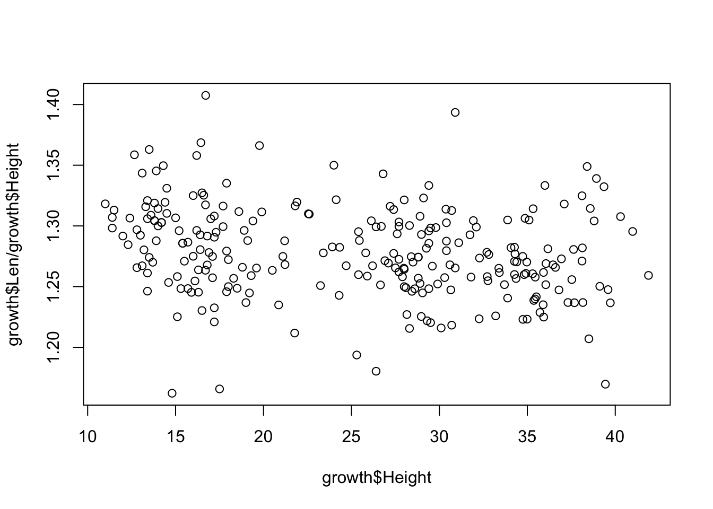
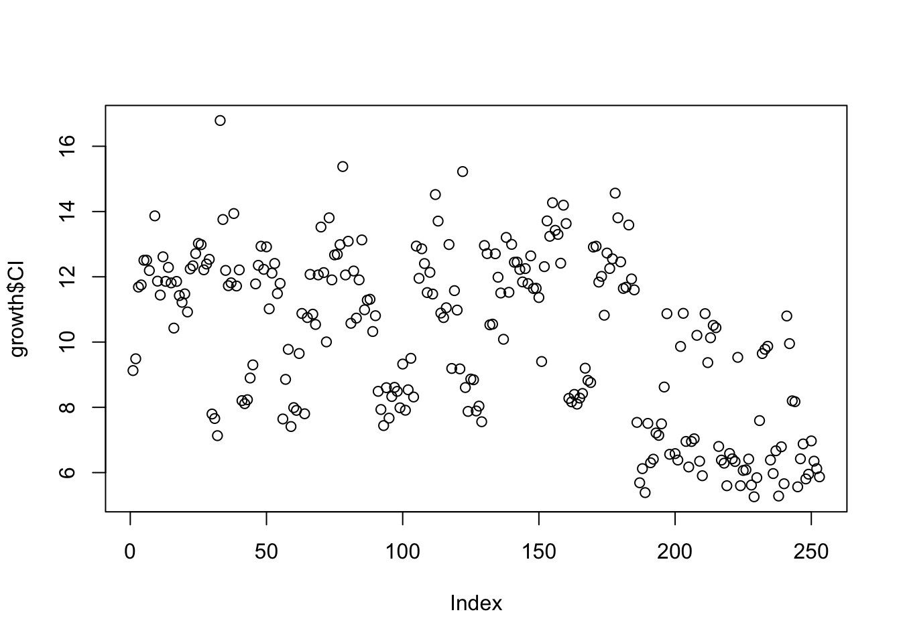
if(reporting_period == "summer"){
wd <- "~/GitHub/EAD-ASEB-Ssolidissima-OA/projects/Transplant_growth_survival/data/"
growth_summer <- read.csv(file = paste(wd,"June2022_Sep2022_surfclam_transplant.xlsx - data.csv",sep=""), stringsAsFactors = F)
growth<-growth_summer
growth <- growth[!is.na(growth$Collection.month),]
growth$Elapsed_days <- as.numeric(growth$Elapsed_days)
growth$Collection1_date <- as.Date(growth$Collection_date, format = "%m/%d/%Y")
growth$Site <- as.factor(growth$Site)
growth$Collection.month <- factor(growth$Collection.month)
levels(growth$Collection.month)[levels(growth$Collection.month)=='August_transcriptomics'] <- 'August'
growth$Site <- factor(growth$Site, levels = c("Ptown", "Eel_Pond", "Dennis"))
levels(growth$Site) <- c("Prov", "Eel Pond", "Dennis")
growth$Collection.month <- factor(growth$Collection.month, levels = c("July", "August", "September"))
levels(growth$Collection.month) <- c("Jul", "Aug", "Sep")
growth_summer <- growth
# For growth measurements, just use animals that were alive upon collection
growth <- growth[growth$AliveOrDead=="L",]
growth <- growth[!is.na(growth$Collection.month),]
plot(growth$Len/growth$Height, xlim = c(340,360))
mean(growth$Len/growth$Height, na.rm = TRUE) #1.285
growth[growth$Len/growth$Height>1.2,]
growth[growth$Len/growth$Height<1.1,]
plot(growth$Len/growth$Height~growth$Height)
growth$Treatment <- as.factor(growth$Treatment)
growth$CI <- growth$AFDW/(growth$Len^3)*1000000
plot(growth$CI)
growth[growth$CI>10,]
growth <- growth[growth$CI<10,]
plot(growth$CI)
growth$AFDW <- growth$AFDW_g
growth$DW <- as.numeric(growth$DW_g)
}##------------------------------------------------------------
## I still need to fill in any QC'ed data --
## with the ratio of length to height --
## But first, I want to check the notebook / frozen clams --
##------------------------------------------------------------
#growth[!is.na(growth$Start_len_mm),]
#growth <- growth[!is.na(growth$L_mm),]
#growth <- growth[growth$AliveOrDead=="L",]
growth$len_tot <- growth$Len-growth$Start_len_mm #len_tot is growth not final length
growth$len_per_day <- growth$len_tot/growth$Elapsed_days
growth$height_tot <- growth$Height-growth$Start_height_mm
growth$height_per_day <- growth$height_tot/growth$Elapsed_days
growth$ratio.LH <- growth$height_tot/growth$len_tot
growth <- growth[growth$ratio.LH < 1 & growth$ratio.LH > 0,]
mean(growth$len_tot, na.rm = TRUE)[1] 21.09983mean(growth$len_per_day, na.rm = TRUE)[1] 0.1245683#growth[growth$len_tot<=0,"Len"]<- NA Plot total change in length as a function of starting length
par(mfrow = c(1,1))
plot(growth$Elapsed_days, growth$len_tot, col = growth$Site)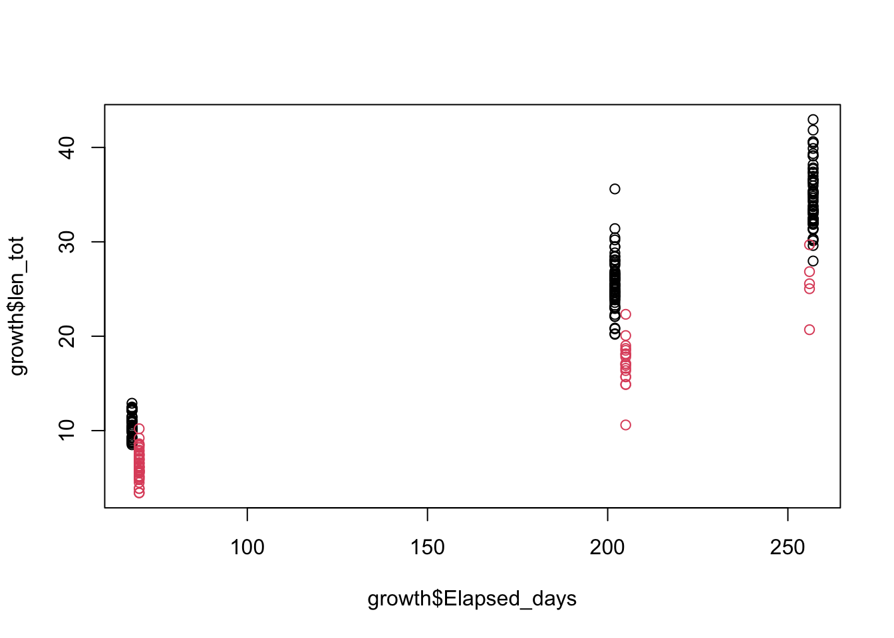
plot(growth$Elapsed_days, growth$Start_len_mm)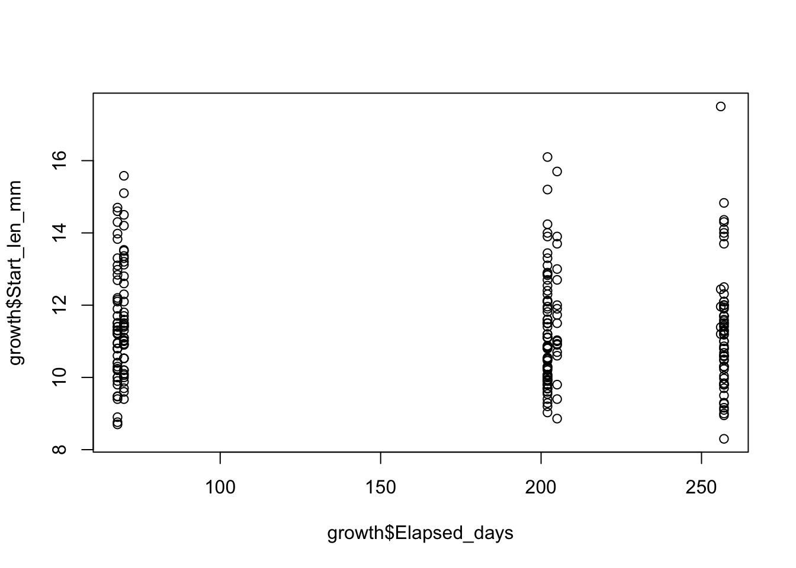
Ptown treatment comparison
growth <- growth[!is.na(growth$len_tot),]
mod_growth_full <- lme(len_tot/Elapsed_days*30~Treatment+Collection.month+Site,
#*Collection.month,
#+Start_len_mm+Start_len_mm:Site,
random = ~1|Location_code,
data = growth)library(svglite)
library(ftExtra)Registered S3 method overwritten by 'ftExtra':
method from
as_flextable.data.frame flextable
Attaching package: 'ftExtra'The following object is masked from 'package:flextable':
separate_headerThe following object is masked from 'package:huxtable':
as_flextable#Commenting out b/c seems to be causing memory usage issues
#https://ardata-fr.github.io/flextable-book/plotting-flextable.html
ft <- as_flextable(mod_growth_full, fit = "fixed", just = "center")%>%
add_header_lines("Growth (mm/day)")
ftGrowth (mm/day) | |||||||
|---|---|---|---|---|---|---|---|
group | Estimate | Standard Error | df | statistic | p-value | ||
Fixed effects | |||||||
(Intercept) | 4.550 | 0.101 | 215 | 44.977 | 0.0000 | *** | |
TreatmentS | -0.110 | 0.082 | 215 | -1.346 | 0.1798 |
| |
Collection.monthApr | -0.540 | 0.105 | 215 | -5.136 | 0.0000 | *** | |
Collection.monthJun | -0.429 | 0.121 | 215 | -3.537 | 0.0005 | *** | |
SiteEel Pond | -1.673 | 0.079 | 215 | -21.109 | 0.0000 | *** | |
Random effects | |||||||
Location_code | sd_(Intercept) | 0.216 | |||||
Residual | sd_Observation | 0.454 | |||||
Signif. codes: 0 <= '***' < 0.001 < '**' < 0.01 < '*' < 0.05 | |||||||
square root of the estimated residual variance: 0.5 | |||||||
data's log-likelihood under the model: -177.2 | |||||||
Akaike Information Criterion: 368.4 | |||||||
Bayesian Information Criterion: 392.9 | |||||||
gr <- gen_grob(ft)
plot(gr)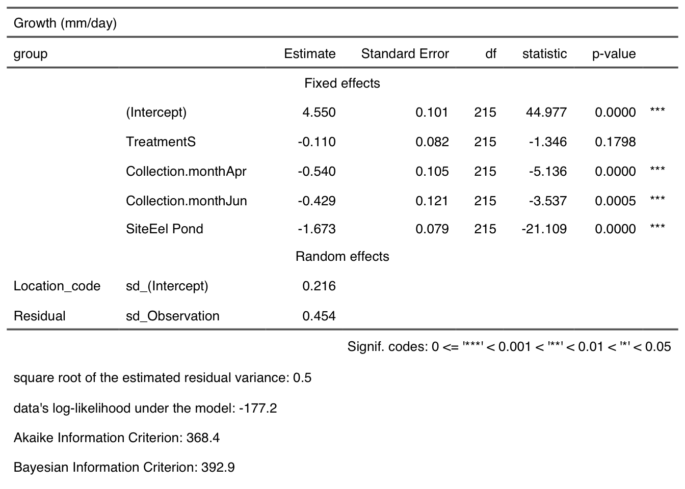
library(patchwork)
ggarrange(gr,gr)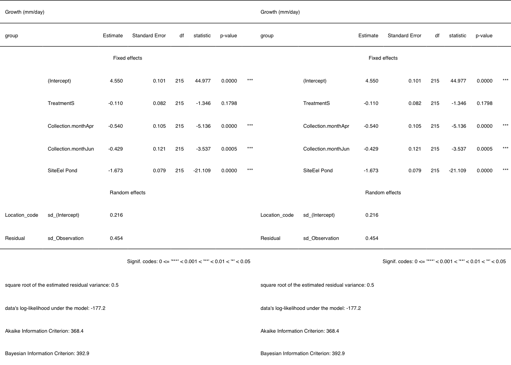
library(tables)
tab <- tabular(
(Species + 1) ~ (n = 1) + Format(digits = 2) *
(Sepal.Length + Sepal.Width) * (mean + sd),
data = iris
)
as_flextable(tab)Species | Sepal.Length | Sepal.Width | |||
|---|---|---|---|---|---|
n | mean | sd | mean | sd | |
setosa | 50 | 5.01 | 0.35 | 3.43 | 0.38 |
versicolor | 50 | 5.94 | 0.52 | 2.77 | 0.31 |
virginica | 50 | 6.59 | 0.64 | 2.97 | 0.32 |
All | 150 | 5.84 | 0.83 | 3.06 | 0.44 |
#Length change
#https://stackoverflow.com/questions/77037940/how-to-convert-nlme-summary-object-into-table
summary(mod_growth_full)Linear mixed-effects model fit by REML
Data: growth
AIC BIC logLik
368.4321 392.8835 -177.216
Random effects:
Formula: ~1 | Location_code
(Intercept) Residual
StdDev: 0.2161049 0.454428
Fixed effects: len_tot/Elapsed_days * 30 ~ Treatment + Collection.month + Site
Value Std.Error DF t-value p-value
(Intercept) 4.549824 0.10115823 215 44.97730 0.0000
TreatmentS -0.110329 0.08197825 215 -1.34583 0.1798
Collection.monthApr -0.539846 0.10510634 215 -5.13619 0.0000
Collection.monthJun -0.428697 0.12119840 215 -3.53715 0.0005
SiteEel Pond -1.672723 0.07924195 215 -21.10906 0.0000
Correlation:
(Intr) TrtmnS Cllc.A Cllc.J
TreatmentS -0.458
Collection.monthApr -0.627 -0.007
Collection.monthJun -0.658 0.039 0.573
SiteEel Pond -0.435 0.021 0.244 0.386
Standardized Within-Group Residuals:
Min Q1 Med Q3 Max
-2.92913521 -0.60445434 -0.04832064 0.62530974 2.61565396
Number of Observations: 248
Number of Groups: 29 anova(mod_growth_full)| numDF | denDF | F-value | p-value |
|---|---|---|---|
| 1 | 215 | 5.62e+03 | 0 |
| 1 | 215 | 1.39 | 0.24 |
| 2 | 215 | 17.5 | 9.32e-08 |
| 1 | 215 | 446 | 0 |
# summary(mod_growth_ful)$tTable %>%
# as_tibble(rownames="variable") %>%
# knitr::kable(digits=3)
fit <- linear_reg() %>%
set_engine("lm") %>%
fit(formula = mpg ~ cyl, data = mtcars)
fit %>% tidy()| term | estimate | std.error | statistic | p.value |
|---|---|---|---|---|
| (Intercept) | 37.9 | 2.07 | 18.3 | 8.37e-18 |
| cyl | -2.88 | 0.322 | -8.92 | 6.11e-10 |
fit %>% glance()| r.squared | adj.r.squared | sigma | statistic | p.value | df | logLik | AIC | BIC | deviance | df.residual | nobs |
|---|---|---|---|---|---|---|---|---|---|---|---|
| 0.726 | 0.717 | 3.21 | 79.6 | 6.11e-10 | 1 | -81.7 | 169 | 174 | 308 | 30 | 32 |
mod_growth_full <- lmer(len_tot/Elapsed_days*30~Treatment+Collection.month+Site+(1|Location_code), data = growth)
#as_flextable(mod_growth_full, options(show.signif.stars = FALSE))
mod.out <- anova(mod_growth_full)
mod.out%>%
kbl(caption = "Mixed model output")%>%
kable_classic(full_width=F, html_font = "Cambria")%>%
kable_styling(bootstrap_options = c("striped","hover","condensed"))| npar | Sum Sq | Mean Sq | F value | |
|---|---|---|---|---|
| Treatment | 1 | 0.2861897 | 0.2861897 | 1.385874 |
| Collection.month | 2 | 7.2154542 | 3.6077271 | 17.470425 |
| Site | 1 | 92.0169408 | 92.0169408 | 445.592208 |
# mod.out <- coeff(mod_growth_full)
mod.out%>%
kbl(caption = "Mixed model output")%>%
kable_classic(full_width=F, html_font = "Cambria")%>%
kable_styling(bootstrap_options = c("striped","hover","condensed"))| npar | Sum Sq | Mean Sq | F value | |
|---|---|---|---|---|
| Treatment | 1 | 0.2861897 | 0.2861897 | 1.385874 |
| Collection.month | 2 | 7.2154542 | 3.6077271 | 17.470425 |
| Site | 1 | 92.0169408 | 92.0169408 | 445.592208 |
#write.csv(summary(mod_growth_full), "LMER output_growth.csv")mod_growth_full.CI <- lme(CI~Treatment+Collection.month+Site,
#+Start_len_mm+Start_len_mm:Site,
random = ~1|Location_code,
data = growth)
summary(mod_growth_full.CI)Linear mixed-effects model fit by REML
Data: growth
AIC BIC logLik
750.6729 775.1244 -368.3365
Random effects:
Formula: ~1 | Location_code
(Intercept) Residual
StdDev: 0.2262083 1.036618
Fixed effects: CI ~ Treatment + Collection.month + Site
Value Std.Error DF t-value p-value
(Intercept) 8.845526 0.1821654 215 48.55766 0.0000
TreatmentS -0.154781 0.1506118 215 -1.02768 0.3053
Collection.monthApr 3.808401 0.1859536 215 20.48038 0.0000
Collection.monthJun 2.726700 0.2098696 215 12.99235 0.0000
SiteEel Pond -2.735380 0.1685048 215 -16.23325 0.0000
Correlation:
(Intr) TrtmnS Cllc.A Cllc.J
TreatmentS -0.530
Collection.monthApr -0.655 0.090
Collection.monthJun -0.666 0.118 0.541
SiteEel Pond -0.484 0.057 0.268 0.366
Standardized Within-Group Residuals:
Min Q1 Med Q3 Max
-3.33642362 -0.52816591 -0.04810808 0.49213942 6.13877998
Number of Observations: 248
Number of Groups: 29 # M_int<-update(mod_growth_full, .~. - Start_len_mm:Site)
# M <- update(M_int, ~. - Treatment:Site)
# M2 <- update(M_int, ~. - Start_len_mm)
#
# summary(M_int)
# summary(M)
# summary(M2)
# AIC(mod_growth_full,M_int,M,M2)
#banner(snug = TRUE, bandChar = "-") # <--- create a small banner
# Remove growth measurements that are <(-2)... There are none.
#growth_dec[growth_dec$growth_height<0,]
#growth_dec <- growth_dec[growth_dec$growth_height>(-2),]growth$Site <- factor(growth$Site)
levels(growth$Treatment) <- c("Control","Shell addition")
gg0 <- ggplot(data = growth, aes(x=as.factor(Collection.month), y=Len, color = Treatment))+
geom_boxplot()+
xlab("Month") +
ylab("Length (mm)")+
ylim(0,55)+
scale_color_discrete(name="Treatment")+
ggtitle ('A. Length')+
facet_wrap(facets = "Site")
gg0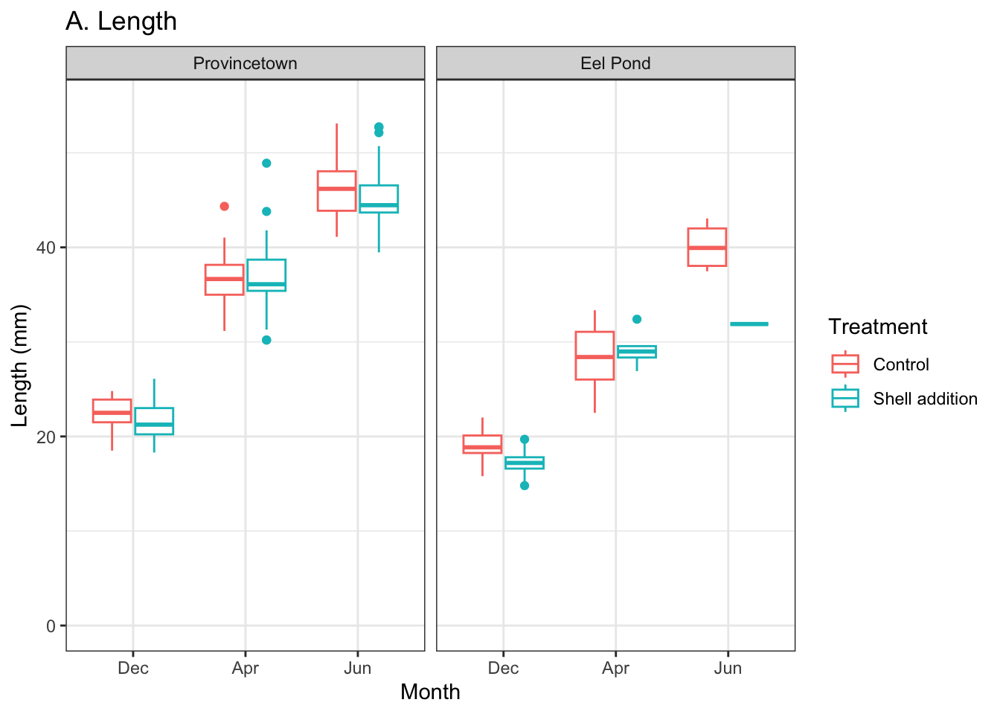
gg1 <- ggplot(data = growth, aes(x=as.factor(Collection.month), y=len_tot/(Elapsed_days/30), color = Treatment))+
geom_boxplot()+
xlab("Month") +
ylab("Growth per month (mm/month)")+
ylim(0,10)+
scale_color_discrete(name="Treatment")+
ggtitle ('B. Growth')+
facet_wrap(facets = "Site")
gg1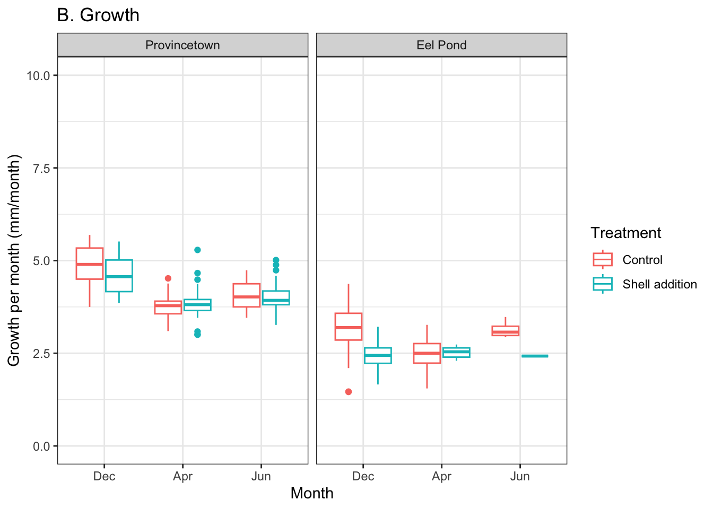
gg2 <- ggplot(data = growth, aes(x=as.factor(Collection.month), y=AFDW, color = Treatment))+
geom_boxplot()+
xlab("Month") +
ylab("Tissue weight (AFDW, g)")+
ylim(0,1)+
scale_color_discrete(name="Treatment")+
ggtitle ('C. Tissue weight')+
facet_wrap(facets = "Site")
gg2Warning: Removed 48 rows containing non-finite outside the scale range
(`stat_boxplot()`).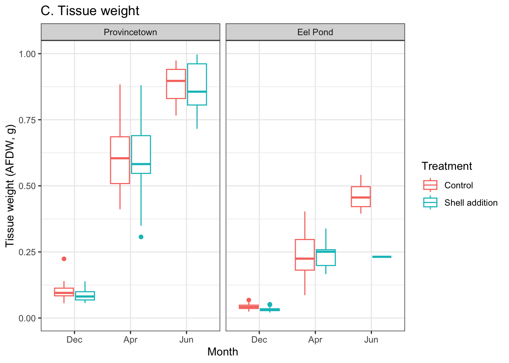
CI_label <- expression(paste("Condition index (mg / ","cm"^3,")", sep = ""))
gg3 <- ggplot(data = growth, aes(x=as.factor(Collection.month), y=CI, color = Treatment))+
geom_boxplot()+
xlab("Month") +
ylab(CI_label)+
ylim(0,18)+
scale_color_discrete(name="Treatment")+
ggtitle ('D. Condition index')+
facet_wrap(facets = "Site")
gg3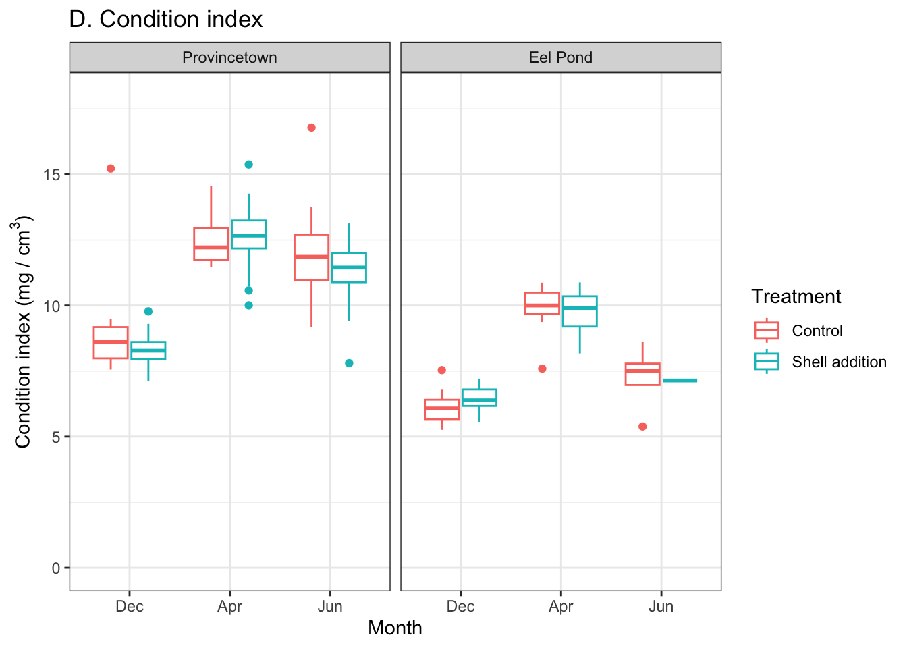
ggarrange(gg0,gg1,gg2,gg3, ncol=2, common.legend = TRUE, legend = "right")Warning: Removed 48 rows containing non-finite outside the scale range
(`stat_boxplot()`).$`1`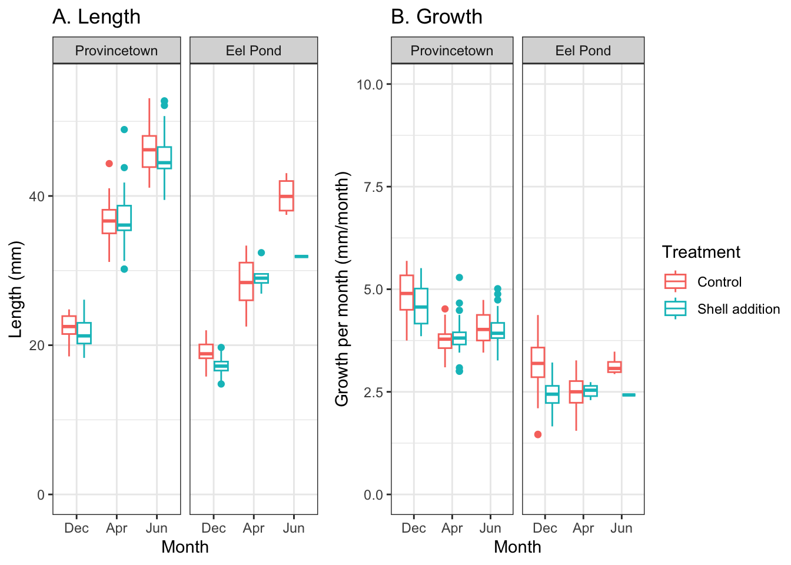
$`2`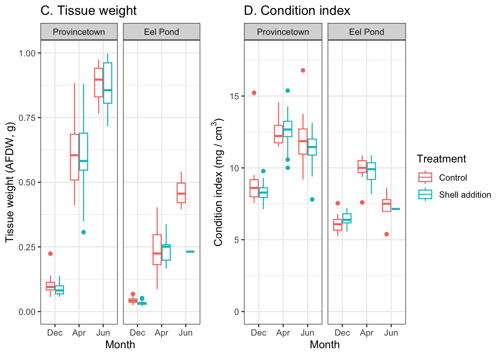
attr(,"class")
[1] "list" "ggarrange"gg4 <- ggplot(data = growth, aes(x=as.factor(Collection.month), y=Height/Len, color = Treatment))+
geom_boxplot()+
xlab("Month") +
ylab("Height:Length allometric ratio")+
#ylim(0,9)+
scale_color_discrete(name="Treatment")+
ggtitle ('Allometry')+
facet_wrap(facets = "Site")
gg4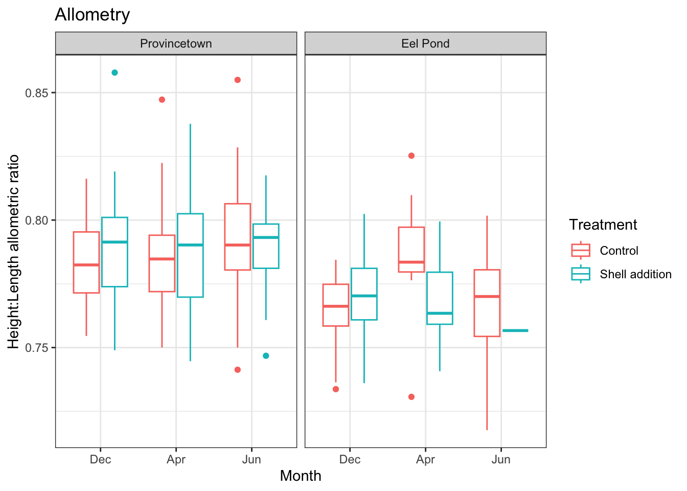
gg5 <- ggplot(data = growth, aes(x=as.factor(Collection.month), y=AFDW/DW, color = Treatment))+
geom_boxplot()+
xlab("Month") +
ylab("AFDW / DW")+
#ylim(0,9)+
scale_color_discrete(name="Treatment")+
ggtitle ('Check')+
facet_wrap(facets = "Site")
gg5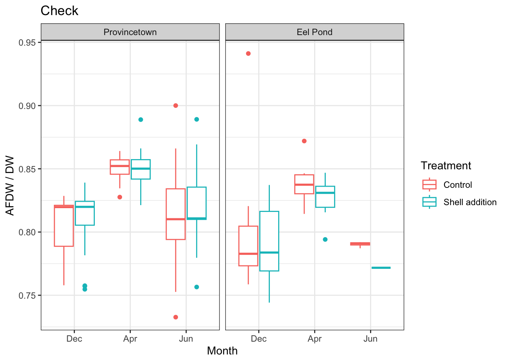
ggarrange(gg0,gg1,gg3, ncol=3, common.legend = TRUE, legend = "right")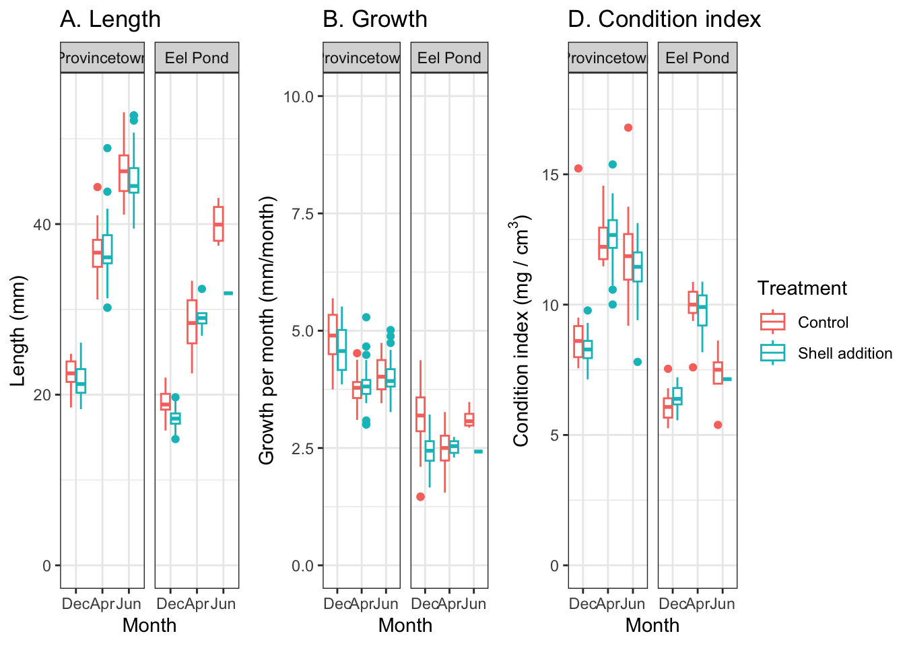
ggarrange(gg1,gg3, ncol=2, common.legend = TRUE, legend = "right")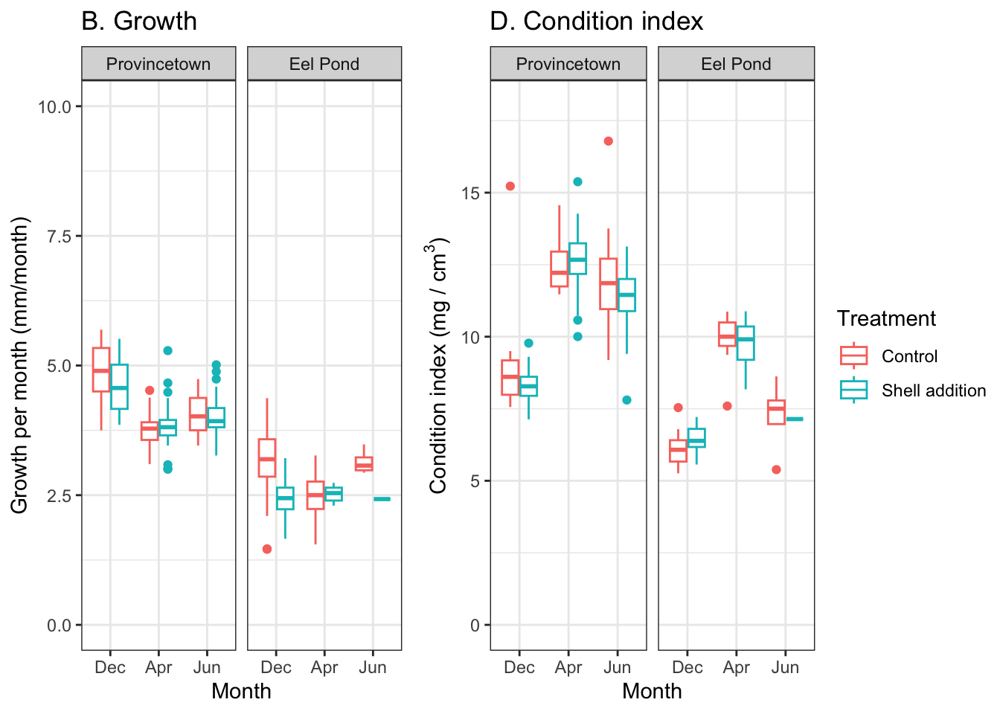
gg0 <- ggplot(data = growth, aes(x=as.factor(Collection.month), y=Len, color = Site))+
geom_boxplot()+
xlab("Month") +
ylab("Length (mm)")+
ylim(0,60)+
scale_color_discrete(name="Treatment")+
ggtitle ('Length')#+
#facet_wrap(facets = "Site")
gg0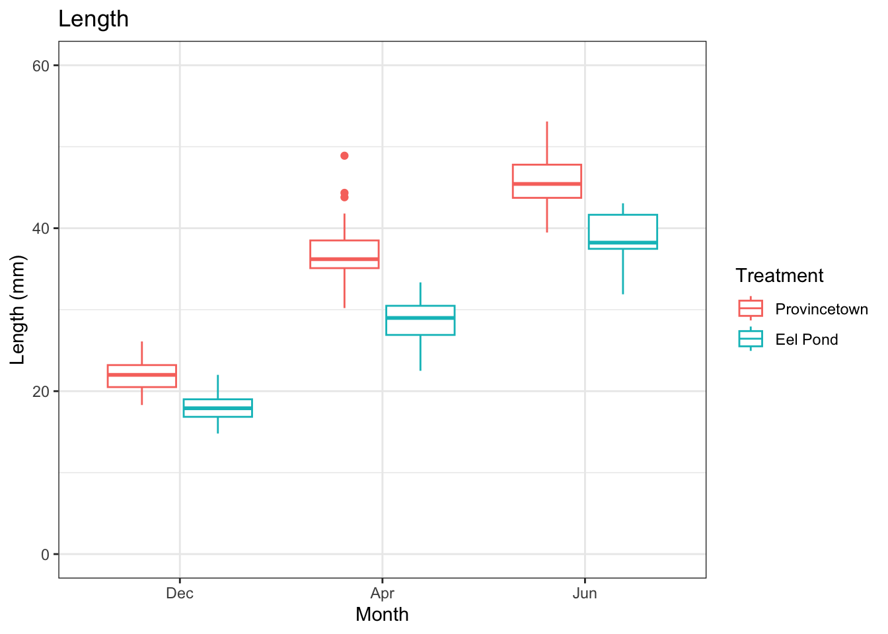
gg1 <- ggplot(data = growth, aes(x=as.factor(Collection.month), y=len_tot/(Elapsed_days/30), color = Site))+
geom_boxplot()+
xlab("Month") +
ylab("Growth per month (mm / month)")+
ylim(0,9)+
scale_color_discrete(name="Treatment")+
ggtitle ('Growth')#+
#facet_wrap(facets = "Site")
gg1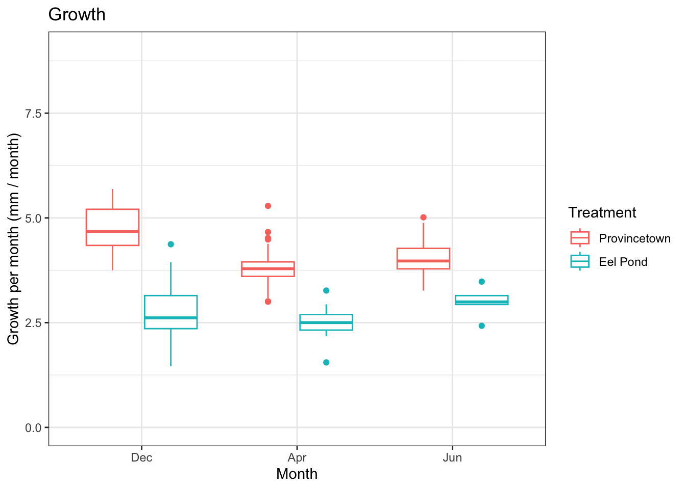
gg2 <- ggplot(data = growth, aes(x=as.factor(Collection.month), y=(AFDW)/(Elapsed_days/30), color = Site))+
geom_boxplot()+
xlab("Month") +
ylab("Growth per month (AFDW mg / month)")+
ylim(0,.25)+
scale_color_discrete(name="Treatment")+
ggtitle ('Tissue weight')#+
#facet_wrap(facets = "Site")
gg2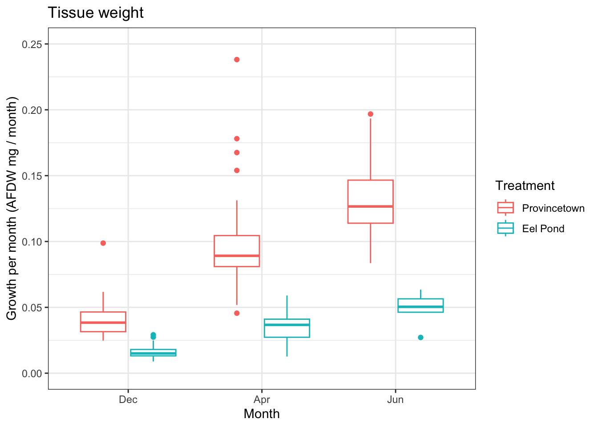
CI_label <- expression(paste("Condition index( g ","mm"^-3,10^-6,")", sep = ""))
CI_label <- expression(paste("Condition index (mg / ","cm"^3,")", sep = ""))
gg3 <- ggplot(data = growth, aes(x=as.factor(Collection.month), y=CI, color = Site))+
geom_boxplot()+
xlab("Month") +
#ylab("Condition index (mg / cm^3)")+
ylab(CI_label)+
ylim(0,18)+
scale_color_discrete(name="Treatment")+
ggtitle ('Condition index')#+
#facet_wrap(facets = "Site")
gg3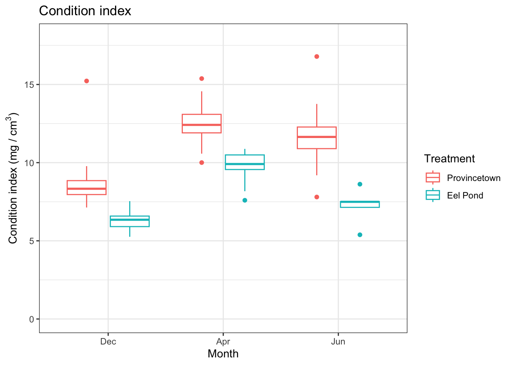
gg4 <- ggplot(data = growth, aes(x=as.factor(Collection.month), y=Height/Len, color = Treatment))+
geom_boxplot()+
xlab("Month") +
ylab("Height:Length allometric ratio")+
#ylim(0,9)+
scale_color_discrete(name="Treatment")+
ggtitle ('Allometry')+
facet_wrap(facets = "Site")
gg4gg5 <- ggplot(data = growth, aes(x=as.factor(Collection.month), y=AFDW/DW, color = Treatment))+
geom_boxplot()+
xlab("Month") +
ylab("AFDW / DW")+
#ylim(0,9)+
scale_color_discrete(name="Treatment")+
ggtitle ('Check')+
facet_wrap(facets = "Site")
gg5ggarrange(gg0,gg1,gg3, ncol=3, common.legend = TRUE, legend = "right")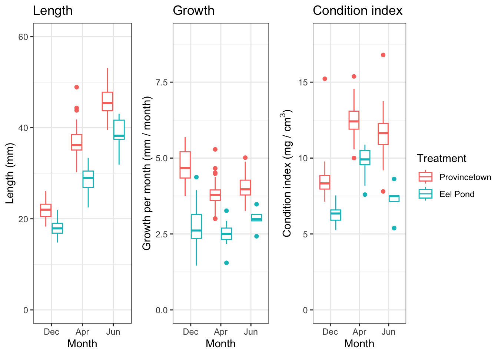
ggarrange(gg1,gg3, ncol=2, common.legend = TRUE, legend = "right")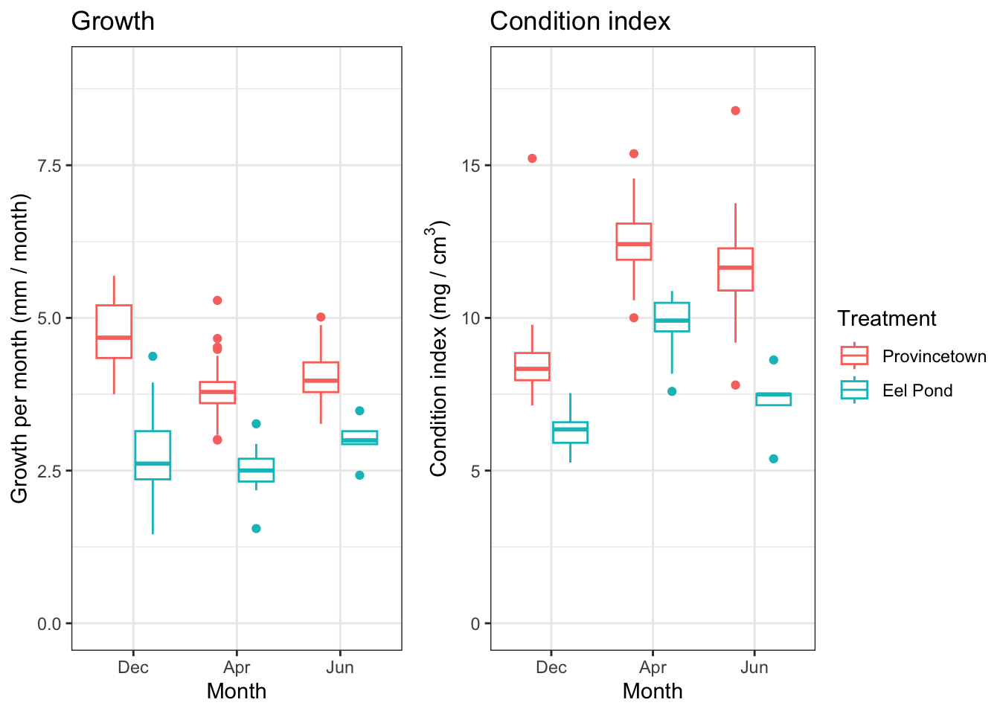
Initial and final lengths and weights for DEB model
gg1 <- ggplot(data = growth, aes(x=as.factor(Collection.month), y=len_tot, color = Treatment))+
geom_boxplot()+
xlab("Month") +
ylab("Length (mm)")+
#ylim(0,9)+
scale_color_discrete(name="Treatment")+
ggtitle ('Growth')+
facet_wrap(facets = "Site")
gg1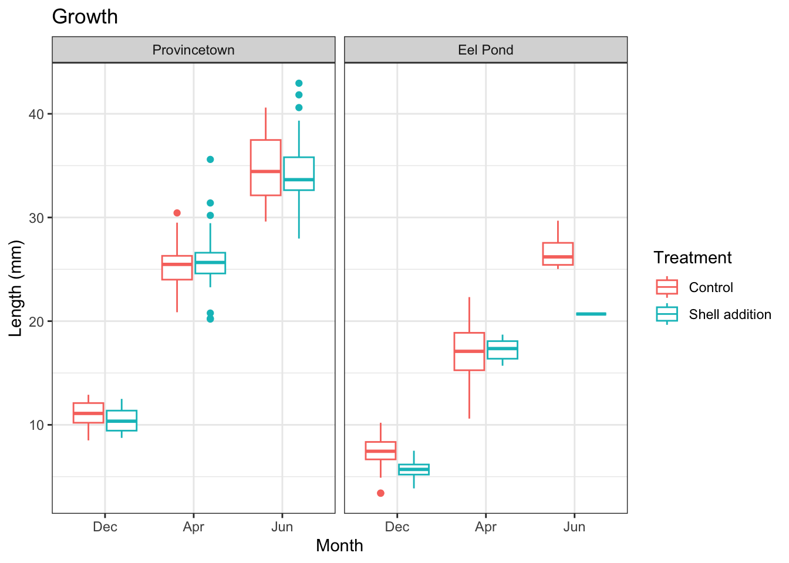
gg2 <- ggplot(data = growth, aes(x=as.factor(Collection.month), y=len_tot, color = as.factor(Collection.month)))+
geom_boxplot()+
xlab("Month") +
ylab("Length (mm)")+
#ylim(0,9)+
scale_color_discrete(name="Treatment")+
ggtitle ('Growth')+
facet_wrap(facets = "Site")
gg2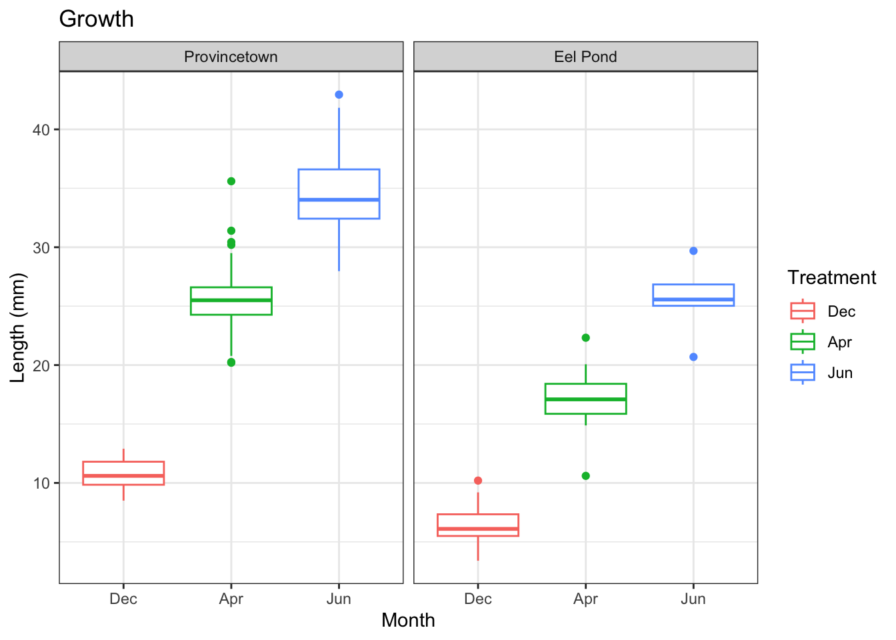
growth$row <- as.factor(substr(growth$Location_code,1,1))
gg3 <- ggplot(data = growth, aes(x=as.factor(Collection.month), y=len_tot, color = as.factor(row)))+
geom_boxplot()+
xlab("Month") +
ylab("Length (mm)")+
#ylim(0,9)+
scale_color_discrete(name="Treatment")+
ggtitle ('Growth')+
facet_wrap(facets = "Site")
gg3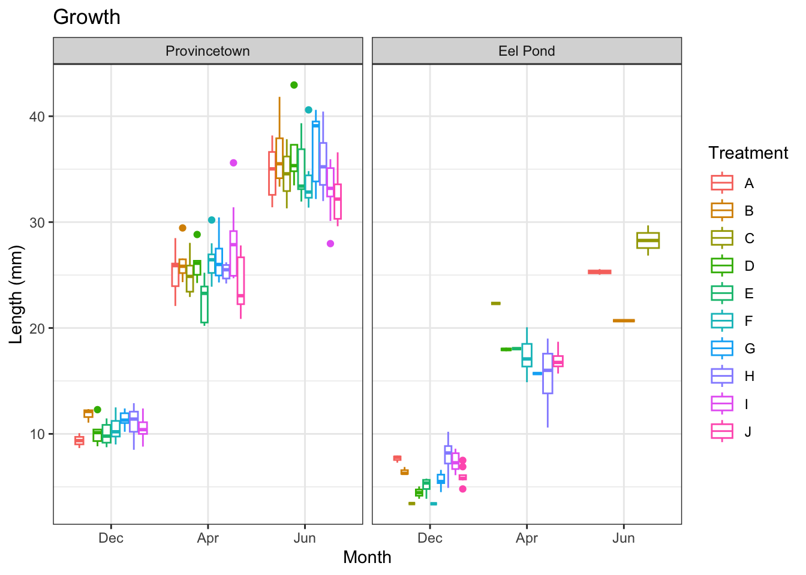
gg4 <- ggplot(data = growth, aes(x=as.factor(Collection.month), y=len_tot, color = as.factor(Location_code)))+
geom_boxplot()+
xlab("Month") +
ylab("Length (mm)")+
#ylim(0,9)+
scale_color_discrete(name="Treatment")+
ggtitle ('Growth')+
facet_wrap(facets = "Site")
gg4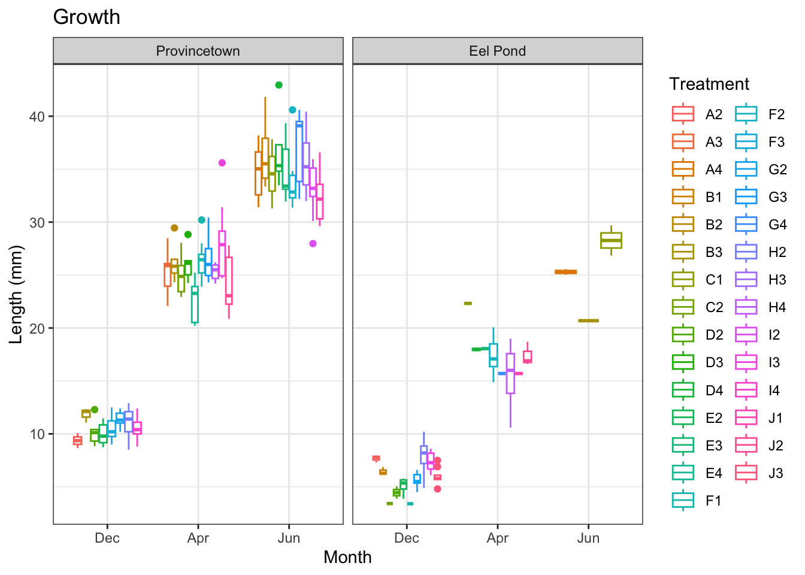
growth$Start_len_mm [1] 13.83000 12.84000 13.44000 12.54000 11.81000 11.11000 10.46000 9.92000
[9] 9.81000 14.36000 11.44000 11.94000 10.58000 9.84000 10.04000 8.95000
[17] 14.10000 10.30000 10.68000 9.27000 14.24000 12.83000 12.10000 10.08000
[25] 10.07000 10.24000 9.69000 9.69000 13.98000 10.24000 8.76000 14.83000
[33] 11.56000 11.96000 11.61000 10.86000 9.94000 10.27000 9.54000 12.98000
[41] 12.69000 11.51000 9.48000 9.47000 12.87000 10.83000 10.55000 9.92000
[49] 10.05000 9.29000 10.23000 11.18000 9.80000 8.30000 12.15000 10.41000
[57] 11.23000 10.94000 10.96000 12.31000 11.26000 10.86000 10.47000 9.16000
[65] 9.97000 9.30000 12.13000 10.83000 10.52000 9.94000 10.88000 10.00000
[73] 9.03000 15.20000 16.10000 11.60000 9.40000 10.50000 10.80000 9.20000
[81] 9.70000 14.30000 12.10000 11.70000 11.30000 9.80000 9.70000 14.30000
[89] 12.10000 12.20000 11.30000 11.70000 10.40000 10.00000 8.90000 13.30000
[97] 11.90000 11.40000 11.20000 10.80000 9.80000 13.90000 14.00000 11.10000
[105] 11.50000 10.00000 11.50000 10.80000 9.90000 9.80000 13.90000 14.00000
[113] 11.20000 11.00000 10.60000 10.30000 9.80000 14.60000 13.10000 11.30000
[121] 11.40000 11.50000 10.00000 9.90000 10.20000 8.70000 12.10000 12.00000
[129] 12.00000 10.60000 10.80000 10.30000 9.10000 9.50000 12.70000 12.30000
[137] 11.50000 10.50000 11.10000 11.20000 12.50000 12.00000 11.70000 11.40000
[145] 11.50000 10.80000 11.00000 11.30000 9.00000 13.30000 11.50000 12.40000
[153] 10.30000 10.20000 11.10000 9.60000 9.80000 14.70000 11.30000 11.20000
[161] 10.80000 10.80000 10.60000 10.20000 10.30000 9.40000 13.70000 11.90000
[169] 11.50000 11.70000 11.60000 10.60000 10.50000 9.80000 12.90000 13.10000
[177] 12.10000 11.90000 11.40000 10.30000 9.90000 11.20000 13.12000 10.91000
[185] 10.06000 17.50000 12.44000 10.52714 10.52714 10.52714 11.20000 11.96000
[193] 11.39000 11.03000 15.58000 13.36000 10.93000 11.73000 10.93000 13.53000
[201] 12.80000 11.03000 9.88000 8.86000 15.10000 15.70000 12.70000 11.50000
[209] 9.40000 10.60000 14.20000 13.30000 11.70000 12.30000 9.70000 11.10000
[217] 10.00000 13.90000 12.60000 13.20000 10.90000 11.60000 10.20000 11.80000
[225] 11.10000 11.90000 9.80000 10.90000 11.00000 14.50000 11.40000 9.60000
[233] 11.40000 11.44444 11.44444 13.00000 13.70000 12.00000 10.70000 13.50000
[241] 12.10000 11.50000 11.30000 10.20000 9.40000 10.10000 11.00000 11.50000gg5 <- ggplot(data = growth, aes(x=as.factor(Collection.month), y=Start_len_mm, color = as.factor(Location_code)))+
geom_boxplot()+
xlab("Month") +
ylab("Length (mm)")+
#ylim(0,9)+
scale_color_discrete(name="Treatment")+
ggtitle ('Growth')+
facet_wrap(facets = "Site")
gg5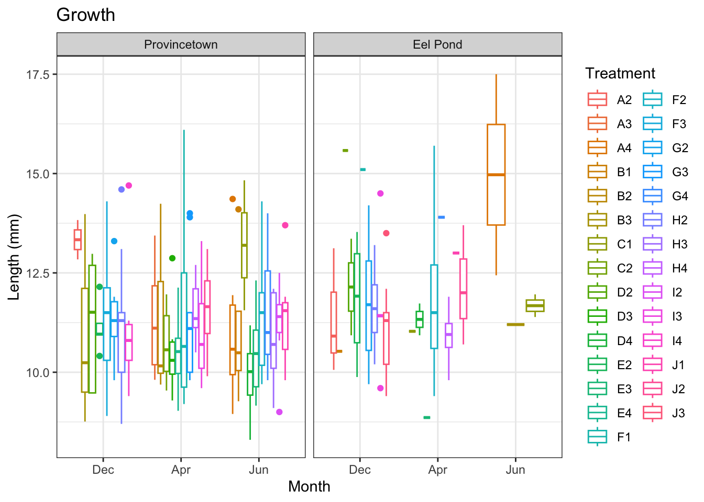
gg5 <- ggplot(data = growth, aes(x=Start_len_mm, y=len_tot, color = as.factor(Collection.month)))+
geom_point()+
xlab("Month") +
ylab("Length (mm)")+
#ylim(0,9)+
scale_color_discrete(name="Collection.month")+
ggtitle ('Growth')+
facet_wrap(facets = "Site")
gg5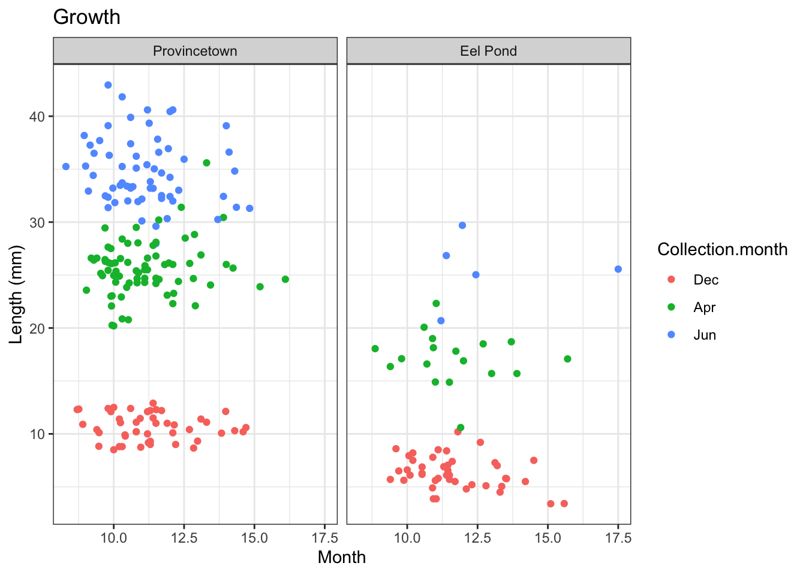
#So for each cage we want Site, month collected, start date, end date, mean start length, final length
str(growth)'data.frame': 248 obs. of 51 variables:
$ Start_date : chr "9/27/2022" "9/27/2022" "9/27/2022" "9/27/2022" ...
$ Site : Factor w/ 2 levels "Provincetown",..: 1 1 1 1 1 1 1 1 1 1 ...
$ Treatment : Factor w/ 2 levels "Control","Shell addition": 1 1 1 1 1 1 1 1 1 1 ...
$ Buried_Dec : chr "N" "N" "" "" ...
$ Location_code : chr "A2" "A2" "A3" "A3" ...
$ color.1 : chr "R" "Y" "R" "Y" ...
$ color.2 : chr "" "" "" "" ...
$ Start_len_mm : num 13.8 12.8 13.4 12.5 11.8 ...
$ Start_height_mm : num 10.86 9.74 10.63 9.29 9.32 ...
$ Start_thickness_mm : num 5.92 5.31 5.68 5.01 5.02 4.62 4.44 4.13 4.33 5.86 ...
$ Collection.month : Factor w/ 3 levels "Dec","Apr","Jun": 1 1 2 2 2 2 2 2 2 3 ...
$ Collection1_date : Date, format: "2022-12-04" "2022-12-04" ...
$ Elapsed_days : num 68 68 202 202 202 202 202 202 202 257 ...
$ depth_cm : chr "4+" "4+" "S" "Deep" ...
$ color_collection : chr "R" "NO LABEL" "" "" ...
$ L_mm_extra : num 24.1 21.6 NA NA NA ...
$ H_mm_extra : num 19.3 17.1 NA NA NA ...
$ T_mm : num 11.2 10 NA NA NA ...
$ Collection.notes : chr "" "" "" "" ...
$ Dissection.ID.label : chr "P125" "P126" "P51" "P.1" ...
$ Label.different.when.collected : chr "" "no label" "" "" ...
$ Biodeposition.label : chr "" "" "3" "" ...
$ Dead_or_missing : chr "N" "N" "N" "N" ...
$ Len : num 23.9 21.5 37.5 41 37.8 ...
$ Height : num 19.2 17.1 29.6 31.7 29.4 ...
$ Thickness : num 11.2 10 NA 18.5 16.2 ...
$ Est..growth.by.height : num 8.44 7.36 NA NA NA NA NA NA NA NA ...
$ Est.start.height.from.linear.function : num 10.5 9.6 10.3 9.2 9.2 8.6 8.2 7.7 7.7 10.6 ...
$ Start_height.from.marking : num 11 9.7 10.85 9.77 9.3 ...
$ Growth.increment.from.mark_height : num 10.9 9.3 23.5 27.2 24.3 ...
$ Tin.only : num 1.095 1.104 1.083 0.989 1.001 ...
$ Tin...gonad...somatic.tissue : num 1.25 1.22 1.81 1.96 1.78 ...
$ Reweigh..if.necessary. : num NA NA NA NA NA NA NA NA NA NA ...
$ Ash.weight..tin...gonad...somatic.tissue. : num 1.18 1.15 1.19 1.15 1.11 ...
$ DW : num 0.152 0.115 0.727 0.973 0.783 ...
$ AFDW : num 0.1246 0.0943 0.6162 0.8117 0.6755 ...
$ Ratio.for.samples.with.DW.0.01g : chr "46%" "58%" "85%" "83%" ...
$ Corrected.AFDW.using.an.average.of.82...Used.for..20.samples.with...organic...7.which.was.identified.to.caused.by.incomplete..anoxic..muffle.furnace.issues.: num 0.1246 0.0943 0.6162 0.8117 0.6755 ...
$ Notes : chr "" "Most likely Y (2nd of color series) given start height" "" "" ...
$ X..gonad : chr "" "" "" "" ...
$ X..digestive : chr "" "" "" "" ...
$ Shell.weight : num NA NA NA NA NA ...
$ Start.height.function.params : num 0.839 1.389 NA NA NA ...
$ AliveOrDead : chr "Alive" "Alive" "Alive" "Alive" ...
$ CI : num 9.13 9.49 11.68 11.75 12.51 ...
$ len_tot : num 10.07 8.66 24.06 28.49 25.99 ...
$ len_per_day : num 0.148 0.127 0.119 0.141 0.129 ...
$ height_tot : num 8.34 7.36 18.97 22.45 20.08 ...
$ height_per_day : num 0.1226 0.1082 0.0939 0.1111 0.0994 ...
$ ratio.LH : num 0.828 0.85 0.788 0.788 0.773 ...
$ row : Factor w/ 10 levels "A","B","C","D",..: 1 1 1 1 1 1 1 1 1 1 ...growth$Start_date <- as.Date(strptime(growth$Start_date, format = "%m/%d/%Y"))
df_summary <- growth %>%
group_by(Collection.month,as.factor(Location_code),Site) %>%
filter(AliveOrDead=="Alive") %>%
filter(Start_len_mm<=13&Start_len_mm>=10) %>%
summarise(
Li = round(mean(Start_len_mm, na.rm = TRUE),1),
Lf = round(mean(Len, na.rm = TRUE),1),
Elapsed_days = round(mean(Elapsed_days, na.rm = TRUE),0),
Start_date = unique(Start_date, na.rm = TRUE),
End_date = unique(Collection1_date, na.rm = TRUE),
Ave_growth = round(mean(Len-Start_len_mm, na.rm = TRUE),1)
)`summarise()` has grouped output by 'Collection.month',
'as.factor(Location_code)'. You can override using the `.groups` argument. # Perc_SE = round(sd(X..organic*100, na.rm = TRUE) /
# sqrt(sum(!is.na(X..organic))),0),
# Remove negative growths by adjusting initial lengths to match final lengths. This is weird, but the alternative is setting final lengths to be the same as initial lengths
# df_summary$Li[(df_summary$Lf-df_summary$Li)<0]<- df_summary$Lf[(df_summary$Lf-df_summary$Li)<0]
#OK a little less weird... final lengths are just set to the same as initial lengths if there was no positive growth.
df_summary$Lf[(df_summary$Lf-df_summary$Li)<0]<- df_summary$Li[(df_summary$Lf-df_summary$Li)<0]
gg5 <- ggplot(data = df_summary, aes(x=Li, y=Lf, color = as.factor(Elapsed_days)))+
geom_point()+
xlab("Length initial (mm)") +
ylab("Length final (mm)")+
#ylim(0,9)+
scale_color_discrete(name="Collection.month")+
ggtitle ('Initial and final averages')+
facet_wrap(facets = "Site")
gg5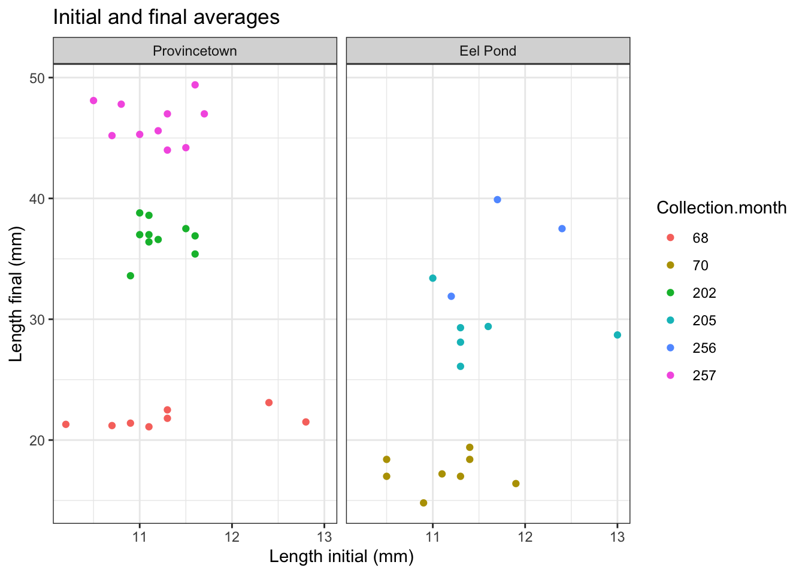
gg5 <- ggplot(data = df_summary, aes(x=Li, y=Ave_growth, color = as.factor(Elapsed_days)))+
geom_point()+
xlab("Length initial (mm)") +
ylab("Growth (mm)")+
#ylim(0,9)+
scale_color_discrete(name="Collection.month")+
ggtitle ('Initial and final averages')+
facet_wrap(facets = "Site")
gg5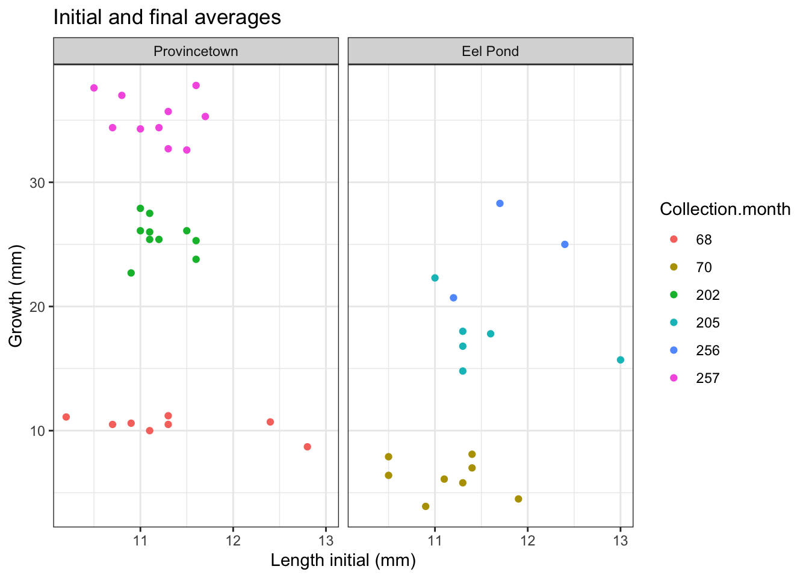
# write.csv(df_summary,file="~/GitHub/EAD-ASEB-Ssolidissima-OA/projects/Transplant_growth_survival/data/Growth.est.len.csv")gg2 <- ggplot(data = growth, aes(x=as.factor(Collection.month), y=len_tot/10, color =as.factor(Site)))+
geom_boxplot()+
xlab("Month") +
ylab("Length (cm)")+
#ylim(0,9)+
scale_color_discrete(name="Treatment")+
ggtitle ('Growth')+
facet_wrap(~Site)
gg2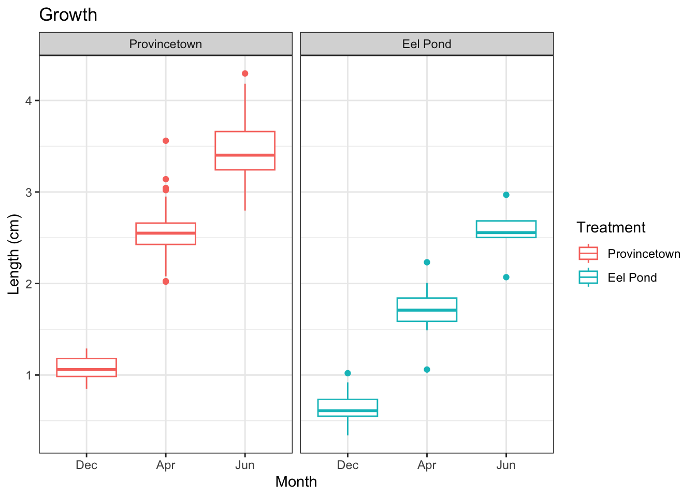
growth$Collection1_date [1] "2022-12-04" "2022-12-04" "2023-04-17" "2023-04-17" "2023-04-17"
[6] "2023-04-17" "2023-04-17" "2023-04-17" "2023-04-17" "2023-06-11"
[11] "2023-06-11" "2023-06-11" "2023-06-11" "2023-06-11" "2023-06-11"
[16] "2023-06-11" "2023-06-11" "2023-06-11" "2023-06-11" "2023-06-11"
[21] "2023-04-17" "2023-04-17" "2023-04-17" "2023-04-17" "2023-04-17"
[26] "2023-04-17" "2023-04-17" "2023-04-17" "2022-12-04" "2022-12-04"
[31] "2022-12-04" "2023-06-11" "2023-06-11" "2023-04-17" "2023-04-17"
[36] "2023-04-17" "2023-04-17" "2023-04-17" "2023-04-17" "2022-12-04"
[41] "2022-12-04" "2022-12-04" "2022-12-04" "2022-12-04" "2023-04-17"
[46] "2023-04-17" "2023-04-17" "2023-04-17" "2023-04-17" "2023-04-17"
[51] "2023-06-11" "2023-06-11" "2023-06-11" "2023-06-11" "2022-12-04"
[56] "2022-12-04" "2022-12-04" "2022-12-04" "2022-12-04" "2023-06-11"
[61] "2023-06-11" "2023-06-11" "2023-06-11" "2023-06-11" "2023-06-11"
[66] "2023-06-11" "2023-04-17" "2023-04-17" "2023-04-17" "2023-04-17"
[71] "2023-04-17" "2023-04-17" "2023-04-17" "2023-04-17" "2023-04-17"
[76] "2023-04-17" "2023-04-17" "2023-04-17" "2023-04-17" "2023-04-17"
[81] "2023-04-17" "2023-06-11" "2023-06-11" "2023-06-11" "2023-06-11"
[86] "2023-06-11" "2023-06-11" "2022-12-04" "2022-12-04" "2022-12-04"
[91] "2022-12-04" "2022-12-04" "2022-12-04" "2022-12-04" "2022-12-04"
[96] "2022-12-04" "2022-12-04" "2022-12-04" "2022-12-04" "2022-12-04"
[101] "2022-12-04" "2023-04-17" "2023-04-17" "2023-04-17" "2023-04-17"
[106] "2023-04-17" "2023-04-17" "2023-04-17" "2023-04-17" "2023-04-17"
[111] "2023-06-11" "2023-06-11" "2023-06-11" "2023-06-11" "2023-06-11"
[116] "2023-06-11" "2023-06-11" "2022-12-04" "2022-12-04" "2022-12-04"
[121] "2022-12-04" "2022-12-04" "2022-12-04" "2022-12-04" "2022-12-04"
[126] "2022-12-04" "2023-06-11" "2023-06-11" "2023-06-11" "2023-06-11"
[131] "2023-06-11" "2023-06-11" "2023-06-11" "2023-06-11" "2023-04-17"
[136] "2023-04-17" "2023-04-17" "2023-04-17" "2023-04-17" "2023-04-17"
[141] "2023-06-11" "2023-06-11" "2023-06-11" "2023-06-11" "2023-06-11"
[146] "2023-06-11" "2023-06-11" "2023-06-11" "2023-06-11" "2023-04-17"
[151] "2023-04-17" "2023-04-17" "2023-04-17" "2023-04-17" "2023-04-17"
[156] "2023-04-17" "2023-04-17" "2022-12-04" "2022-12-04" "2022-12-04"
[161] "2022-12-04" "2022-12-04" "2022-12-04" "2022-12-04" "2022-12-04"
[166] "2022-12-04" "2023-06-11" "2023-06-11" "2023-06-11" "2023-06-11"
[171] "2023-06-11" "2023-06-11" "2023-06-11" "2023-06-11" "2023-04-17"
[176] "2023-04-17" "2023-04-17" "2023-04-17" "2023-04-17" "2023-04-17"
[181] "2023-04-17" "2023-04-17" "2022-12-05" "2022-12-05" "2022-12-05"
[186] "2023-06-09" "2023-06-09" "2022-12-05" "2022-12-05" "2022-12-05"
[191] "2023-06-09" "2023-06-09" "2023-06-09" "2023-04-19" "2022-12-05"
[196] "2022-12-05" "2022-12-05" "2023-04-19" "2023-04-19" "2022-12-05"
[201] "2022-12-05" "2022-12-05" "2022-12-05" "2023-04-19" "2022-12-05"
[206] "2023-04-19" "2023-04-19" "2023-04-19" "2023-04-19" "2023-04-19"
[211] "2022-12-05" "2022-12-05" "2022-12-05" "2022-12-05" "2022-12-05"
[216] "2022-12-05" "2022-12-05" "2023-04-19" "2022-12-05" "2022-12-05"
[221] "2022-12-05" "2022-12-05" "2022-12-05" "2022-12-05" "2022-12-05"
[226] "2023-04-19" "2023-04-19" "2023-04-19" "2023-04-19" "2022-12-05"
[231] "2022-12-05" "2022-12-05" "2022-12-05" "2022-12-05" "2022-12-05"
[236] "2023-04-19" "2023-04-19" "2023-04-19" "2023-04-19" "2022-12-05"
[241] "2022-12-05" "2022-12-05" "2022-12-05" "2022-12-05" "2022-12-05"
[246] "2022-12-05" "2022-12-05" "2022-12-05"gg2 <- ggplot(data = growth, aes(x=Collection1_date, y=len_tot/30, color =as.factor(Site)))+
geom_point()+
xlab("Month") +
ylab("Length (mm)")+
#ylim(0,9)+
scale_color_discrete(name="Treatment")+
ggtitle ('Growth')+
facet_wrap(~Site)
gg2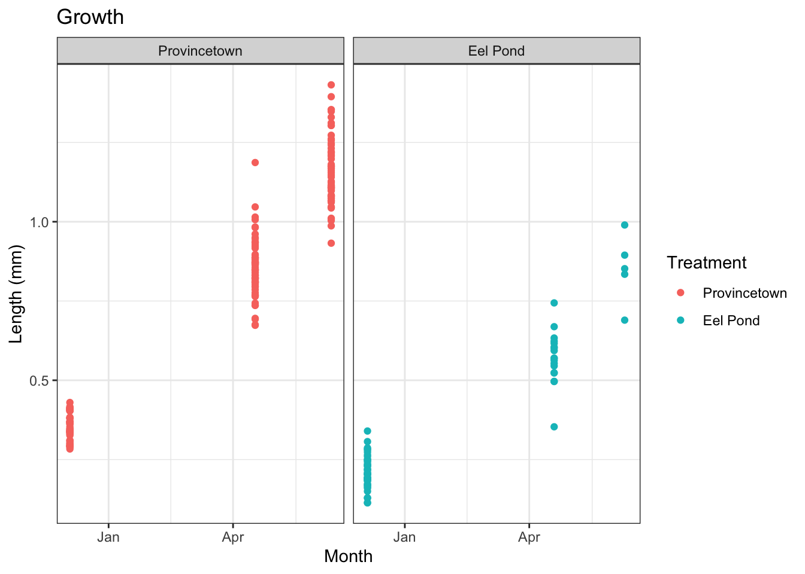
Shape coefficient parameter
str(growth)'data.frame': 248 obs. of 51 variables:
$ Start_date : Date, format: "2022-09-27" "2022-09-27" ...
$ Site : Factor w/ 2 levels "Provincetown",..: 1 1 1 1 1 1 1 1 1 1 ...
$ Treatment : Factor w/ 2 levels "Control","Shell addition": 1 1 1 1 1 1 1 1 1 1 ...
$ Buried_Dec : chr "N" "N" "" "" ...
$ Location_code : chr "A2" "A2" "A3" "A3" ...
$ color.1 : chr "R" "Y" "R" "Y" ...
$ color.2 : chr "" "" "" "" ...
$ Start_len_mm : num 13.8 12.8 13.4 12.5 11.8 ...
$ Start_height_mm : num 10.86 9.74 10.63 9.29 9.32 ...
$ Start_thickness_mm : num 5.92 5.31 5.68 5.01 5.02 4.62 4.44 4.13 4.33 5.86 ...
$ Collection.month : Factor w/ 3 levels "Dec","Apr","Jun": 1 1 2 2 2 2 2 2 2 3 ...
$ Collection1_date : Date, format: "2022-12-04" "2022-12-04" ...
$ Elapsed_days : num 68 68 202 202 202 202 202 202 202 257 ...
$ depth_cm : chr "4+" "4+" "S" "Deep" ...
$ color_collection : chr "R" "NO LABEL" "" "" ...
$ L_mm_extra : num 24.1 21.6 NA NA NA ...
$ H_mm_extra : num 19.3 17.1 NA NA NA ...
$ T_mm : num 11.2 10 NA NA NA ...
$ Collection.notes : chr "" "" "" "" ...
$ Dissection.ID.label : chr "P125" "P126" "P51" "P.1" ...
$ Label.different.when.collected : chr "" "no label" "" "" ...
$ Biodeposition.label : chr "" "" "3" "" ...
$ Dead_or_missing : chr "N" "N" "N" "N" ...
$ Len : num 23.9 21.5 37.5 41 37.8 ...
$ Height : num 19.2 17.1 29.6 31.7 29.4 ...
$ Thickness : num 11.2 10 NA 18.5 16.2 ...
$ Est..growth.by.height : num 8.44 7.36 NA NA NA NA NA NA NA NA ...
$ Est.start.height.from.linear.function : num 10.5 9.6 10.3 9.2 9.2 8.6 8.2 7.7 7.7 10.6 ...
$ Start_height.from.marking : num 11 9.7 10.85 9.77 9.3 ...
$ Growth.increment.from.mark_height : num 10.9 9.3 23.5 27.2 24.3 ...
$ Tin.only : num 1.095 1.104 1.083 0.989 1.001 ...
$ Tin...gonad...somatic.tissue : num 1.25 1.22 1.81 1.96 1.78 ...
$ Reweigh..if.necessary. : num NA NA NA NA NA NA NA NA NA NA ...
$ Ash.weight..tin...gonad...somatic.tissue. : num 1.18 1.15 1.19 1.15 1.11 ...
$ DW : num 0.152 0.115 0.727 0.973 0.783 ...
$ AFDW : num 0.1246 0.0943 0.6162 0.8117 0.6755 ...
$ Ratio.for.samples.with.DW.0.01g : chr "46%" "58%" "85%" "83%" ...
$ Corrected.AFDW.using.an.average.of.82...Used.for..20.samples.with...organic...7.which.was.identified.to.caused.by.incomplete..anoxic..muffle.furnace.issues.: num 0.1246 0.0943 0.6162 0.8117 0.6755 ...
$ Notes : chr "" "Most likely Y (2nd of color series) given start height" "" "" ...
$ X..gonad : chr "" "" "" "" ...
$ X..digestive : chr "" "" "" "" ...
$ Shell.weight : num NA NA NA NA NA ...
$ Start.height.function.params : num 0.839 1.389 NA NA NA ...
$ AliveOrDead : chr "Alive" "Alive" "Alive" "Alive" ...
$ CI : num 9.13 9.49 11.68 11.75 12.51 ...
$ len_tot : num 10.07 8.66 24.06 28.49 25.99 ...
$ len_per_day : num 0.148 0.127 0.119 0.141 0.129 ...
$ height_tot : num 8.34 7.36 18.97 22.45 20.08 ...
$ height_per_day : num 0.1226 0.1082 0.0939 0.1111 0.0994 ...
$ ratio.LH : num 0.828 0.85 0.788 0.788 0.773 ...
$ row : Factor w/ 10 levels "A","B","C","D",..: 1 1 1 1 1 1 1 1 1 1 ...gg5 <- ggplot(data = growth, aes(x=len_tot^3, y=DW, color = Collection.month))+
geom_point()+
xlab("Length ^2") +
ylab("DW")+
#ylim(0,9)+
scale_color_discrete(name="Treatment")+
ggtitle ('Growth')+
facet_wrap(facets = "Site")
gg5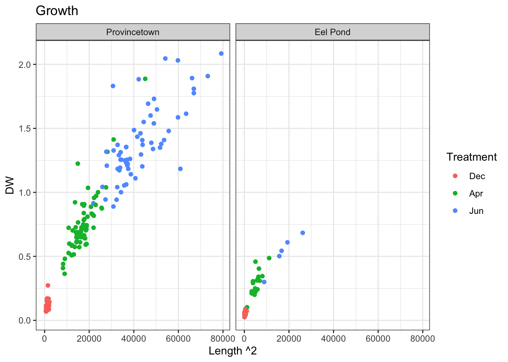
gg5 <- ggplot(data = growth, aes(x=len_tot^3, y=DW, color = Site))+
geom_point()+
xlab("Length ^2") +
ylab("DW")+
#ylim(0,9)+
scale_color_discrete(name="Treatment")+
ggtitle ('Growth')#+
#facet_wrap(facets = "Site")
gg5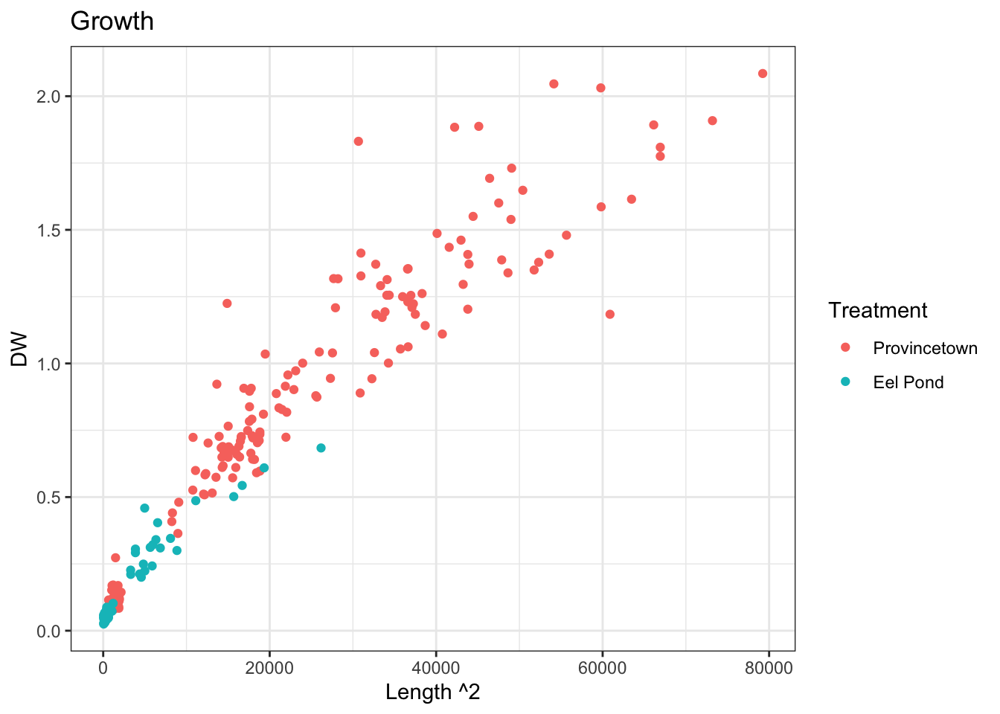
nls(data = growth, DW~(shape*len_tot/10)^3,
start = list(shape = .5))Nonlinear regression model
model: DW ~ (shape * len_tot/10)^3
data: growth
shape
0.3209
residual sum-of-squares: 8.765
Number of iterations to convergence: 4
Achieved convergence tolerance: 4.771e-06# param <- NA
# param$shape <- 0.3209Survival
#Summer
if(reporting_period == "summer"){
growth_summer$Collection.month[growth_summer$Collection.month=="August_transcriptomics"] <- "August"
growth <- growth_summer
growth$Site <- factor(growth$Site, levels = c("Ptown", "Eel_Pond", "Dennis"))
levels(growth$Site) <- c("Prov", "Eel Pond", "Dennis")
growth$Collection.month <- factor(growth$Collection.month, levels = c("July", "August", "September"))
levels(growth$Collection.month) <- c("Jul", "Aug", "Sep")
library(dplyr)
live_count <- growth %>%
group_by(Site, Collection.month, Treatment) %>%
summarise(live = sum(AliveOrDead == 'L', na.rm = TRUE),
dead = sum(AliveOrDead == 'D', na.rm = TRUE))
gg1 <- ggplot(data = live_count, aes(x = Collection.month, y = live/36, colour = Site, group= interaction(Treatment, Site)))+
geom_line(aes(linetype = Treatment))+
geom_point(aes(shape=Treatment))+
ylim(0,1)+
ylab("Proportion surviving (unitless)")+
xlab("Collection month")+
scale_color_brewer(palette="Set1")
gg1
str(growth)
df_summary <- growth %>%
group_by(Collection.month,Location_code,Site, Treatment) %>%
#filter(AliveOrDead=="Alive") %>%
#filter(Start_len_mm<=13&Start_len_mm>=10) %>%
summarise(live = sum(AliveOrDead == 'L', na.rm = TRUE), n = n())
df_summary$prop <- df_summary$live / df_summary$n
#Nope this is how I analyze growth
# m1 <- lme(data = df_summary, prop ~ Site + Treatment * Collection.month, random = (~1|Location_code))
# summary(m1)
#
# m1 <- lmer(data = df_summary, prop ~ Site * Treatment * Collection.month + (1|Location_code), REML = FALSE)
# m2 <- lmer(data = df_summary, prop ~ Site + Treatment + Collection.month + (1|Location_code), REML = FALSE)
# AICc(m1, m2)
m1 <- lm(data = df_summary, prop ~ Site + Treatment * Collection.month)
summary(m1)
gg1 <- ggplot(data = df_summary, aes(x = Collection.month, y = prop, colour = Treatment))+
#geom_line(aes(linetype = Treatment))+
#geom_point(aes(shape=Treatment))+
geom_boxplot()+
ylim(0,1)+
ylab("Proportion surviving (unitless)")+
xlab("Collection month")+
scale_color_brewer(palette="Set1")+
scale_color_discrete(name="Treatment")+
facet_wrap(~Site)
gg1
}#Fall through spring
if(reporting_period == "fall_spring"){
growth <- growth_fall_spring
#growth$Site <- factor(growth$Site, levels = c("Ptown", "Eel Pond"))
#levels(growth$Site) <- c("Prov", "Eel Pond")
levels(growth$Collection.month) <- c("Dec", "Apr", "Jun")
growth$AliveOrDead[growth$Dead_or_missing=="N"]<-"L"
growth$AliveOrDead[growth$Dead_or_missing=="Y"]<-"D"
live_count <- growth %>%
group_by(Site, Collection.month, Treatment) %>%
summarise(live = sum(AliveOrDead == 'L', na.rm = TRUE),
dead = sum(AliveOrDead == 'D', na.rm = TRUE))
live_count <- live_count[live_count$Treatment!="Outside cage",]
gg2 <- ggplot(data = live_count, aes(x = Collection.month, y = live/(live + dead), colour = Site, group= interaction(Treatment, Site)))+
geom_line(aes(linetype = Treatment))+
geom_point(aes(shape=Treatment))+
ylim(0,1)+
ylab("Proportion surviving (unitless)")+
xlab("Collection month")+
scale_color_brewer(palette="Set1")
gg2
ggarrange(gg1,gg2,ncol=2, common.legend = TRUE, legend = "right")
df_summary <- growth %>%
group_by(Collection.month,Location_code,Site, Treatment) %>%
#filter(AliveOrDead=="Alive") %>%
#filter(Start_len_mm<=13&Start_len_mm>=10) %>%
summarise(live = sum(AliveOrDead == 'L', na.rm = TRUE), n = n(), .groups = "keep")
df_summary$prop <- df_summary$live / df_summary$n
df_summary <- df_summary[df_summary$Treatment!="Outside cage",]
#Nope this is how I analyze growth
# m1 <- lme(data = df_summary, prop ~ Site + Treatment * Collection.month, random = (~1|Location_code))
# summary(m1)
#
# m1 <- lmer(data = df_summary, prop ~ Site * Treatment * Collection.month + (1|Location_code), REML = FALSE)
# m2 <- lmer(data = df_summary, prop ~ Site + Treatment + Collection.month + (1|Location_code), REML = FALSE)
# AICc(m1, m2)
m1 <- lm(data = df_summary, prop ~ Site + Treatment * Collection.month)
summary(m1)
gg2 <- ggplot(data = df_summary, aes(x = Collection.month, y = prop, colour = Treatment))+
#geom_line(aes(linetype = Treatment))+
#geom_point(aes(shape=Treatment))+
geom_boxplot()+
ylim(0,1)+
ylab("Proportion surviving (unitless)")+
xlab("Collection month")+
scale_color_brewer(palette="Set1")+
scale_color_discrete(name="Treatment")+
facet_wrap(~Site)
gg2
# I need to include missing clams as dead clams or else if we didn't pull up clam shells this would bias the numbers.
}`summarise()` has grouped output by 'Site', 'Collection.month'. You can
override using the `.groups` argument.
Scale for colour is already present. Adding another scale for colour, which
will replace the existing scale.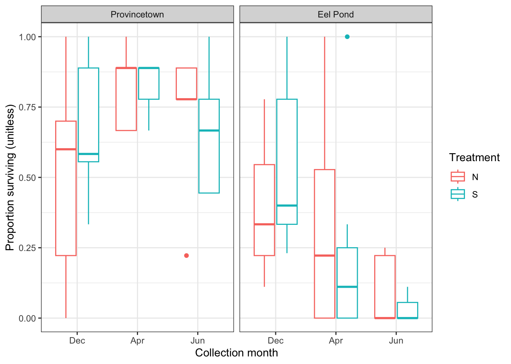
ggarrange(gg1,gg2, ncol=2, common.legend = TRUE, legend = "right")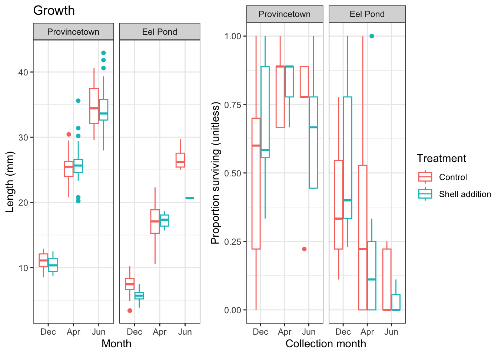
# #---------- Plot for proposal
# # # Pool treatments
# # gg1 <- ggplot(data = growth_dec, aes(x=Site, y=len_tot/Elapsed_days))+
# # geom_boxplot()+
# # xlab("Site") +
# # ylab("Growth (mm/day)")+
# # ylim(0,9/30)+
# # #scale_color_discrete(name="Shell hash addition")+
# # ggtitle ('Change in length Sep - Dec')
# # gg1
# # str(growth_dec)
# mod_growth_full <- lme(height_tot~Site+Start_len_mm+Start_len_mm:Site,
# random = ~1|Location_code, data = growth)
# summary(mod_growth_full)
# M_int<-update(mod_growth_full, .~. - Start_len_mm:Site)
# M2 <- update(M_int, ~. - Start_len_mm)
# summary(M2)
#
# (P <- mean(growth$len_per_day[growth$Site=="Ptown"]))
# (E <- mean(growth$len_per_day[growth$Site=="Eel Pond"]))
# E/P
# (P-E)/E #Overall Provincetown clam growth rate was 50% higher than Eel Pond growth rate
# P/E
#
# (P <- mean(growth$CI[growth$Site=="Ptown"]))
# (E <- mean(growth$CI[growth$Site=="Eel Pond"]))
# E/P
# (P-E)/E #Overall Provincetown clam growth rate was 50% higher than Eel Pond growth rate
# P/E
#
# (P.dec <- mean(growth$CI[growth$Site=="Ptown"&growth$Collection.month=="Dec"], na.rm = TRUE))
# (P.apr <- mean(growth$CI[growth$Site=="Ptown"&growth$Collection.month=="Apr"], na.rm = TRUE))
# (P.jun <- mean(growth$CI[growth$Site=="Ptown"&growth$Collection.month=="Jun"], na.rm = TRUE))
#
# P.apr / P.dec
#
# (E.dec <- mean(growth$CI[growth$Site=="Eel Pond"&growth$Collection.month=="Dec"], na.rm = TRUE))
# (E.apr <- mean(growth$CI[growth$Site=="Eel Pond"&growth$Collection.month=="Apr"], na.rm = TRUE))
# E.apr /E.dec
#
#
# summary <- growth_dec %>%
# group_by(Site) %>%
# summarize(mean_len = mean(len_tot, na.rm = TRUE),
# sd_len = sd(len_tot, na.rm = TRUE))
#
#
#
# gg2 <- ggplot(data = summary, aes(x=Site, y=mean_len))+
# geom_bar()
#
#
# barplot(growth_dec$len_per_day~site)
#
# +
# xlab("Site") +
# #scale_color_discrete(name="Shell hash addition")+
# gg2head(growth)| Start_date | Site | Treatment | Buried_Dec | Location_code | color.1 | color.2 | Start_len_mm | Start_height_mm | Start_thickness_mm | Collection.month | Collection1_date | Elapsed_days | depth_cm | color_collection | L_mm_extra | H_mm_extra | T_mm | Collection.notes | Dissection.ID.label | Label.different.when.collected | Biodeposition.label | Dead_or_missing | Len | Height | Thickness | Est..growth.by.height | Est.start.height.from.linear.function | Start_height.from.marking | Growth.increment.from.mark_height | Tin.only | Tin...gonad...somatic.tissue | Reweigh..if.necessary. | Ash.weight..tin...gonad...somatic.tissue. | DW | AFDW | Ratio.for.samples.with.DW.0.01g | Corrected.AFDW.using.an.average.of.82...Used.for..20.samples.with...organic...7.which.was.identified.to.caused.by.incomplete..anoxic..muffle.furnace.issues. | Notes | X..gonad | X..digestive | Shell.weight | Start.height.function.params | AliveOrDead |
|---|---|---|---|---|---|---|---|---|---|---|---|---|---|---|---|---|---|---|---|---|---|---|---|---|---|---|---|---|---|---|---|---|---|---|---|---|---|---|---|---|---|---|---|
| 9/27/2022 | Provincetown | N | N | A2 | R | 13.8 | 10.9 | 5.92 | Dec | 2022-12-04 | 68 | 4+ | R | 24.1 | 19.3 | 11.2 | P125 | N | 23.9 | 19.2 | 11.2 | 8.44 | 10.5 | 11 | 10.9 | 1.09 | 1.25 | 1.18 | 0.152 | 0.07 | 46% | 0.125 | 0.839 | L | |||||||||
| 9/27/2022 | Provincetown | N | N | A2 | Y | 12.8 | 9.74 | 5.31 | Dec | 2022-12-04 | 68 | 4+ | NO LABEL | 21.6 | 17.1 | 10 | P126 | no label | N | 21.5 | 17.1 | 10 | 7.36 | 9.6 | 9.7 | 9.3 | 1.1 | 1.22 | 1.15 | 0.115 | 0.067 | 58% | 0.0943 | Most likely Y (2nd of color series) given start height | 1.39 | L | |||||||
| 9/27/2022 | Provincetown | N | N | A2 | B | 11.8 | 9.45 | 5.25 | Dec | 2022-12-04 | 68 | Y | 9.3 | D | |||||||||||||||||||||||||||||
| 9/27/2022 | Provincetown | N | N | A2 | L | 11.2 | 8.13 | 4.55 | Dec | 2022-12-04 | 68 | Y | 8.2 | D | |||||||||||||||||||||||||||||
| 9/27/2022 | Provincetown | N | N | A2 | R | Y | 10.3 | 8.11 | 4.61 | Dec | 2022-12-04 | 68 | Y | 8.2 | D | ||||||||||||||||||||||||||||
| 9/27/2022 | Provincetown | N | N | A2 | R | B | 9.95 | 7.61 | 4.13 | Dec | 2022-12-04 | 68 | Y | 7.8 | D |
growth <- growth_aliveANDdead
Alive_count <- growth %>% count(Treatment, Collection.month, Location_code, Site, AliveOrDead)
head(Alive_count)| Treatment | Collection.month | Location_code | Site | AliveOrDead | n |
|---|---|---|---|---|---|
| N | Dec | A2 | Provincetown | Alive | 2 |
| N | Dec | A2 | Provincetown | Dead | 7 |
| N | Dec | A2 | Eel Pond | Alive | 3 |
| N | Dec | A2 | Eel Pond | Dead | 6 |
| N | Dec | C2 | Eel Pond | Alive | 1 |
| N | Dec | C2 | Eel Pond | Dead | 8 |
Alive_count_inside_cage <- Alive_count[Alive_count$Treatment== "N"|Alive_count$Treatment== "S",]
mod_growth_full <- lme(n~Treatment*Collection.month,
random = ~1|Location_code, data = Alive_count_inside_cage)
summary(mod_growth_full) # Not really answering my question but not differences in survival between treatmentsLinear mixed-effects model fit by REML
Data: Alive_count_inside_cage
AIC BIC logLik
524.0307 544.7105 -254.0154
Random effects:
Formula: ~1 | Location_code
(Intercept) Residual
StdDev: 0.0001693316 2.962654
Fixed effects: n ~ Treatment * Collection.month
Value Std.Error DF t-value p-value
(Intercept) 5.705882 0.7185492 69 7.940838 0.0000
TreatmentS -0.261438 1.0019689 69 -0.260924 0.7949
Collection.monthApr -0.352941 1.0161820 69 -0.347321 0.7294
Collection.monthJun -0.470588 1.0161820 69 -0.463094 0.6448
TreatmentS:Collection.monthApr -0.136958 1.3853605 69 -0.098861 0.9215
TreatmentS:Collection.monthJun 0.256913 1.4816994 69 0.173391 0.8629
Correlation:
(Intr) TrtmnS Cllc.A Cllc.J TS:C.A
TreatmentS -0.717
Collection.monthApr -0.707 0.507
Collection.monthJun -0.707 0.507 0.500
TreatmentS:Collection.monthApr 0.519 -0.723 -0.734 -0.367
TreatmentS:Collection.monthJun 0.485 -0.676 -0.343 -0.686 0.489
Standardized Within-Group Residuals:
Min Q1 Med Q3 Max
-1.5884009 -0.9343136 0.1433973 0.9034030 2.1244862
Number of Observations: 104
Number of Groups: 30 (gm1 <- glmer(as.factor(AliveOrDead) ~ Treatment * Collection.month + Site + (1 | Location_code),
data = growth, family = binomial))fixed-effect model matrix is rank deficient so dropping 2 columns / coefficientsWarning in checkConv(attr(opt, "derivs"), opt$par, ctrl = control$checkConv, : Model is nearly unidentifiable: large eigenvalue ratio
- Rescale variables?Generalized linear mixed model fit by maximum likelihood (Laplace
Approximation) [glmerMod]
Family: binomial ( logit )
Formula: as.factor(AliveOrDead) ~ Treatment * Collection.month + Site +
(1 | Location_code)
Data: growth
AIC BIC logLik deviance df.resid
624.5863 663.4571 -303.2932 606.5863 546
Random effects:
Groups Name Std.Dev.
Location_code (Intercept) 1.173
Number of obs: 555, groups: Location_code, 30
Fixed Effects:
(Intercept) TreatmentOutside cage
0.4275 -19.8327
TreatmentS Collection.monthApr
-3.0316 -1.6992
Collection.monthJun SiteEel Pond
-0.9085 2.2312
TreatmentS:Collection.monthApr TreatmentS:Collection.monthJun
3.7885 2.8526
fit warnings:
fixed-effect model matrix is rank deficient so dropping 2 columns / coefficients
optimizer (Nelder_Mead) convergence code: 0 (OK) ; 0 optimizer warnings; 1 lme4 warnings summary(gm1) #Here there is an effect of treatment but it's still not answering my question about initial lengthsGeneralized linear mixed model fit by maximum likelihood (Laplace
Approximation) [glmerMod]
Family: binomial ( logit )
Formula: as.factor(AliveOrDead) ~ Treatment * Collection.month + Site +
(1 | Location_code)
Data: growth
AIC BIC logLik deviance df.resid
624.6 663.5 -303.3 606.6 546
Scaled residuals:
Min 1Q Median 3Q Max
-6.5914 -0.6383 0.2396 0.5466 3.7377
Random effects:
Groups Name Variance Std.Dev.
Location_code (Intercept) 1.376 1.173
Number of obs: 555, groups: Location_code, 30
Fixed effects:
Estimate Std. Error z value Pr(>|z|)
(Intercept) 0.4275 0.4555 0.938 0.347999
TreatmentOutside cage -19.8327 512.0014 -0.039 0.969101
TreatmentS -3.0316 0.6078 -4.988 6.11e-07 ***
Collection.monthApr -1.6992 0.5842 -2.909 0.003629 **
Collection.monthJun -0.9085 0.6253 -1.453 0.146276
SiteEel Pond 2.2312 0.2368 9.422 < 2e-16 ***
TreatmentS:Collection.monthApr 3.7885 0.8241 4.597 4.29e-06 ***
TreatmentS:Collection.monthJun 2.8526 0.8224 3.469 0.000523 ***
---
Signif. codes: 0 '***' 0.001 '**' 0.01 '*' 0.05 '.' 0.1 ' ' 1
Correlation of Fixed Effects:
(Intr) TrtmOc TrtmnS Cllc.A Cllc.J StElPn TS:C.A
TrtmntOtsdc 0.001
TreatmentS -0.595 -0.002
Cllctn.mntA -0.653 -0.001 0.488
Cllctn.mntJ -0.663 -0.002 0.489 0.496
SiteEelPond -0.129 0.000 -0.252 -0.098 -0.001
TrtmntS:C.A 0.477 0.002 -0.782 -0.692 -0.361 0.178
TrtmntS:C.J 0.447 0.002 -0.720 -0.299 -0.724 0.218 0.537
fit warnings:
fixed-effect model matrix is rank deficient so dropping 2 columns / coefficients
optimizer (Nelder_Mead) convergence code: 0 (OK)
Model is nearly unidentifiable: large eigenvalue ratio
- Rescale variables? p <- ggplot(Alive_count, aes(x = as.factor(Site), y = n/8,
color = Treatment))+
ylim(0,1)+
geom_boxplot()
pWarning: Removed 17 rows containing non-finite outside the scale range
(`stat_boxplot()`).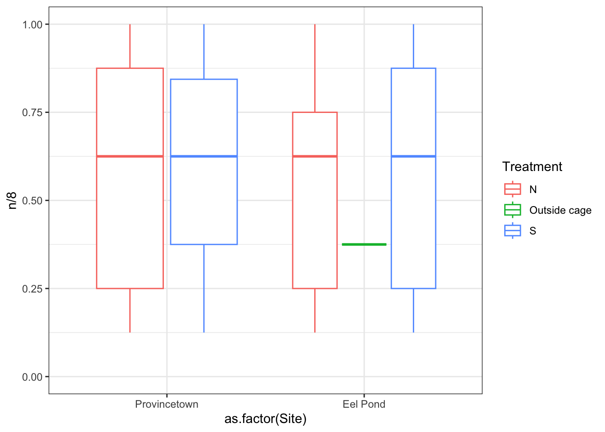
# Generally high survival
# p + geom_boxplot() + facet_grid(Site ~ .)
#
# p <- ggplot(growth_dec, aes(x = Start_len_mm, y = AliveOrDead,
# color = Treatment))
# p + geom_boxplot() + facet_grid(Site ~ .)Alive <- as.data.frame(Alive_count[Alive_count$AliveOrDead=="Alive",])
Alive$perc_alive <- Alive$n/9*100
#Alive